B2_flowkit · Opus 5.5 · attempt j8vaPxM
Batch fk1 · job fk1_B_EXP22004082_26_Oct_2022_flowkit_claude-opus-5-5 · trial B_EXP22004082_26_Oct_2022_flowki__j8vaPxM. Long tool outputs are cut at 6,000 characters.
Score
0.61
0.61
Minutes
10.5
10.5
Agent cost
$2.09
$2.09
Steps
128
128
Screenshots / images
15
15
2
tool call · Bash
cat /task/inputs/plan.md; echo; cat /task/inputs/plate_layout.csv; ls -la /task/inputs/raw/ /task/outputs/ 2>&1
3
tool output
# Plan: EXP22004082 | Testing Flow Cytometry based Caspase Assays (run of 2022-10-25 / 2022-10-26) Notebook text as written by the scientist, up to acquisition of this run. Sections belonging to other runs of this entry are omitted. Row and column labels in the plate tables were added for readability. ## Background Loss of function of PGRN has been shown to negatively impact neural cell health reflected by increased cell death and caspase activity. Caspases are important mediators of the cell death pathway (apoptosis). Caspases are a group of proteases that result in cleavage of protein substrates subsequently leading to cell disassembly. For the PGRN RNAswap program we will want to measure caspase activity in iPSC derived neurons before and after adding the PGRN RNAswap constructs to ensure that PGRN protein replacement is rescuing the health of neurons. Previously I have tested out some caspase activity kits but now I will be trying to detect caspase levels using flow cytometry. ## Objective Measure caspase 3 activity using flow cytometry in H4 cells to practice using this assay which will eventually be used in iPSC derived neurons. ## Materials (entry-level list) - H4 WT cells - H4 PGRN KO E1 - H4 PGRN KO E3 - H4 media - CellEvent Caspase-3/7 Green Flow Cytometry Assay Kit - Cell Signalling (Cleaved Caspase-3 (Asp175) Antibody (Alexa Fluor® 488 Conjugate) #9669) - Camptothecin (abcam) ## DAY 2022-10-25 Test out Cell Signaling Cleaved-Caspase 3 Alexa-flour 488 antibody - Split H4 cells into 24 well plate (50K cells/well) | | 1 | 2 | 3 | 4 | 5 | 6 | |---|---|---|---|---|---|---| | A | WT | WT | WT | WT | WT | WT | | B | E1 | E1 | E1 | E1 | E1 | E1 | | C | E3 | E3 | E3 | E3 | E3 | E3 | | D | | | | | | | 2. Let cells grow for o/n ## DAY 2022-10-26 Run Intracellular flow: ### Materials - 96w round bottom plate - Intracellular Fixation & Permeabilization Buffer Set (cat. no. 88-8824) - Flow Cytometry Staining Buffer (cat. no. 00-4222) - Zombie NIR Biolgend (423105) - Caspase-3 antibody (9669S) ### Procedure - Aspirate all media - PBS wash (200uL PBS) - Aspirate PBS - Add 10x Trypsin (150ul/well) - Put back in incubator (5min) - Add FBS (75ul/well) - Move all solution and cells to a round-bottom 96w plate. Check the empty plate by microscope to confirm that the majority of cells were lifted - Spin down (300g, 5min) - PBS wash (200uL PBS) - Aspirate PBS - Stain with Zombie NIR (1:200 dilution in PBS, 150ul/well) - Put back in incubator (15min) - Spin down and remove all Zombie NIR with a P200 multichannel - Fix the cells in IC Fixation Buffer (200uL/well, 30min, RT, dark). Pipet gently to resuspend cells - Spin down (400-600g, 5min, RT) (400xg this time) - Remove all solution with a P200 multichannel **Do not throw fix down the drain!! Collect and add to waste container in hood - Permeabilize the cells in 1X Permeabilization Buffer (200uL/well, 30min, RT, dark). - Spin down (400-600g, 5min, RT). - Remove all solution with a P200 multichannel **Do not throw fix down the drain!! Collect and add to waste container in hood - Resuspend cells with 100uL/well with 1X Permeabilization Buffer. - Prepare antibodies in 100 uL/well of 1x Permeabilization Buffer. Example: for a final 1:200 dilution, add 1 ul Ab to 100 ul of pearmeabilization buffer. Add to well which already has 100 ul of buffer (final dilution is 1:200). Without washing, add the antibody solution of intracellular antigen(s) to cells and incubate for at least 30 minutes at RT and protect from light. Alternatively, incubate overnight at 4C (200ul/well, dark). For Caspase antibody: 1:50 (4uL into 96uL buffer). Will also try 1:100 (2uL into 98uL buffer) - Spin down (400-600g, 5 min, RT) - Add 200 µL of 1X Permeabilization Buffer to each well and centrifuge samples at 400-600 x g (400xg this time) at room temperature for 5 minutes. Discard the supernatant. - Repeat last step - Resuspend stained cells in an appropriate volume of Flow Cytometry Staining Buffer. - Analyze by flow cytometry (ATTUNE). ### Attune Voltage Settings FSC-20; SSC-290; BL1 (caspase)-250; RL3 (Zombie NIR)-350 ### Flow plate (96-well) | | 1 | 2 | 3 | 4 | 5 | 6 | 7 | 8 | 9 | 10 | 11 | 12 | |---|---|---|---|---|---|---|---|---|---|---|---|---| | A | WT no stain | WT caspase only (1:100) | WT zombie only | WT-1 caspase @ 1:100 | WT-2 caspase @ 1:50 | WT-3 caspase @ 1:50 | E1 no stain | E1 caspase only (1:100) | E1 zombie only | E1-1 caspase @ 1:100 | E1-2 caspase @1:50 | E1-3 caspase @ 1:50 | | B | E3 no stain | E3 caspase only (1:100) | E3 zombie only | E3-1 @ 1:100 | E3-2 caspase @ 1:50 | E3-3 caspase @ 1:50 | | | | | | | file,well,sample,cell_line Caspase_h4_mlk(4)_caspase_Group_A1_WT_no stain.fcs,A1,WT no stain,WT Caspase_h4_mlk(4)_caspase_Group_A2_Wt_caspase_1-100.fcs,A2,WT caspase only (1:100),WT Caspase_h4_mlk(4)_caspase_Group_A3_Wt_zombie.fcs,A3,WT zombie only,WT Caspase_h4_mlk(4)_caspase_Group_A4_Wt-1_1-100.fcs,A4,WT-1 caspase @ 1:100,WT Caspase_h4_mlk(4)_caspase_Group_A5_wt-2_1-50.fcs,A5,WT-2 caspase @ 1:50,WT Caspase_h4_mlk(4)_caspase_Group_A6_wt3_1-50.fcs,A6,WT-3 caspase @ 1:50,WT Caspase_h4_mlk(4)_caspase_Group_A7_E1_no stain.fcs,A7,E1 no stain,E1 Caspase_h4_mlk(4)_caspase_Group_A8_E1_caspase_1-100.fcs,A8,E1 caspase only (1:100),E1 Caspase_h4_mlk(4)_caspase_Group_A9_E1_zombie.fcs,A9,E1 zombie only,E1 Caspase_h4_mlk(4)_caspase_Group_A10_E1-1_1-100.fcs,A10,E1-1 caspase @ 1:100,E1 Caspase_h4_mlk(4)_caspase_Group_A11_E1-2_1-50.fcs,A11,E1-2 caspase @1:50,E1 Caspase_h4_mlk(4)_caspase_Group_A12_E1-3_1-50.fcs,A12,E1-3 caspase @ 1:50,E1 Caspase_h4_mlk(4)_caspase_Group_B1_E3_no stain.fcs,B1,E3 no stain,E3 Caspase_h4_mlk(4)_caspase_Group_B2_E3_caspase_1-100.fcs,B2,E3 caspase only (1:100),E3 Caspase_h4_mlk(4)_caspase_Group_B3_E3_zombie.fcs,B3,E3 zombie only,E3 Caspase_h4_mlk(4)_caspase_Group_B4_E3-1_1-100.fcs,B4,E3-1 @ 1:100,E3 Caspase_h4_mlk(4)_caspase_Group_B5_E3-2_1-50.fcs,B5,E3-2 caspase @ 1:50,E3 Caspase_h4_mlk(4)_caspase_Group_B6_E3-3-1-50.f … [1,970 more characters not shown]
5
tool call · Bash
mkdir -p /task/work && cd /task/work && python3 -c "
import flowkit as fk, glob, os
fs=sorted(glob.glob('/task/inputs/raw/*.fcs'))
s=fk.Sample(fs[0])
print(s.channels)
m=s.metadata
for k in sorted(m):
if not k.startswith('p') or True: print(k, '=', str(m[k])[:200])
"6
tool output
channel_number pnn pns png pne pnr 0 1 Time Time 1.0 (0.0, 0.0) 67108864.0 1 2 FSC-A FSC-A 1.0 (0.0, 0.0) 1048576.0 2 3 SSC-A SSC-A 1.0 (0.0, 0.0) 1048576.0 3 4 BL1-A AAV-GFP-GFP-A 1.0 (0.0, 0.0) 1048576.0 4 5 RL3-A LiveDead-Zombie NIR-A 1.0 (0.0, 0.0) 1048576.0 5 6 FSC-H FSC-H 1.0 (0.0, 0.0) 1048576.0 6 7 SSC-H SSC-H 1.0 (0.0, 0.0) 1048576.0 7 8 BL1-H AAV-GFP-GFP-H 1.0 (0.0, 0.0) 1048576.0 8 9 RL3-H LiveDead-Zombie NIR-H 1.0 (0.0, 0.0) 1048576.0 9 10 FSC-W FSC-W 1.0 (0.0, 0.0) 1024.0 10 11 SSC-W SSC-W 1.0 (0.0, 0.0) 1024.0 11 12 BL1-W AAV-GFP-GFP-W 1.0 (0.0, 0.0) 1024.0 12 13 RL3-W LiveDead-Zombie NIR-W 1.0 (0.0, 0.0) 1024.0 #coincidentcount = 244 #flowrate = 100 #laser1asf = 1.06 #laser1color = Blue #laser1delay = 1100 #laser2asf = 1.11 #laser2color = Red #laser2delay = 1493 #laser3asf = 1.03 #laser3color = Violet #laser3delay = 720 #laser4asf = 1.00 #laser4color = Yellow #laser4delay = 312 #laserconfig = BRV6Y #p12label = GFP #p12target = AAV-GFP #p13label = Zombie NIR #p13target = LiveDead #p1label = NA #p1target = NA #p4label = GFP #p4target = AAV-GFP #p5label = Zombie NIR #p5target = LiveDead #p8label = GFP #p8target = AAV-GFP #p9label = Zombie NIR #p9target = LiveDead #ptdate = 26-Oct-2022 #ptresult = Pass #tr1 = OR_FSC,25000 #widththreshold = 1000 #winext = 0 beginanalysis = 000000000000 begindata = 000000008192 beginstext = 000000000000 btim = 12:13:52 byteord = 1,2,3,4 cells = NA com = NA cyt = 0A29009 Attune NxT Acoustic Focusing Cytometer (Lasers: BRV6Y) cytsn = 2AFC228071019 datatype = F date = 26-Oct-2022 endanalysis = 000000000000 enddata = 000003072863 endstext = 000000000000 etim = 12:15:31 exp = NA fil = A10_E1-1_1-100.fcs hostid = SEA11065ATTUNE inst = NA lost = 0 mode = L nextdata = 000000000000 op = Jeff Huang originality = Original p10b = 32 p10e = 0,0 p10f = NA p10l = 488 p10n = FSC-W p10r = 1024 p10s = FSC-W p10v = 20 p11b = 32 p11e = 0,0 p11f = NA p11l = 488 p11n = SSC-W p11r = 1024 p11s = SSC-W p11v = 290 p12b = 32 p12e = 0,0 p12f = NA p12l = 488 p12n = BL1-W p12r = 1024 p12s = AAV-GFP-GFP-W p12v = 250 p13b = 32 p13e = 0,0 p13f = NA p13l = 640 p13n = RL3-W p13r = 1024 p13s = LiveDead-Zombie NIR-W p13v = 350 p1b = 32 p1e = 0,0 p1f = NA p1l = NA p1n = Time p1r = 67108864 p1s = Time p1v = NA p2b = 32 p2e = 0,0 p2f = NA p2l = 488 p2n = FSC-A p2r = 1048576 p2s = FSC-A p2v = 20 p3b = 32 p3e = 0,0 p3f = NA p3l = 488 p3n = SSC-A p3r = 1048576 p3s = SSC-A p3v = 290 p4b = 32 p4e = 0,0 p4f = NA p4l = 488 p4n = BL1-A p4r = 1048576 p4s = AAV-GFP-GFP-A p4v = 250 p5b = 32 p5e = 0,0 p5f = NA p5l = 640 p5n = RL3-A p5r = 1048576 p5s = LiveDead-Zombie NIR-A p5v = 350 p6b = 32 p6e = 0,0 p6f = NA p6l = 488 p6n = FSC-H p6r = 1048576 p6s = FSC-H p6v = 20 p7b = 32 p7e = 0,0 p7f = NA p7l = 488 p7n = SSC-H p7r = 1048576 p7s = SSC-H p7v = 290 p8b = 32 p8e = 0,0 p8f = NA p8l = 488 p8n = BL1-H p8r = 1048576 p8s = AAV-GFP-GFP-H p8v = 250 p9b = 32 p9e = 0,0 p9f = NA p9l = 640 p9n = RL3-H p9r = 1048576 p9s = LiveDead-Zombie NIR-H p9v = 350 par = 13 plateid = NA platename = Caspase_h4_mlk(4) proj = caspase smno = Group spillover = 6,BL1-A,RL3-A,BL1-H,RL3-H,BL1-W,RL3-W,1.000000,0.000000,0.000000,0.000000,0.000000,0.000000,0.000000,1.000000,0.000000,0.000000,0.000000,0.000000,0.000000,0.000000,1.000000,0.000000,0.000000,0.000000, src = NA sys = SEA11065ATTUNE Microsoft Windows 10 Enterprise LTSC timestep = 0.001 tot = 58936 vol = 164000 wellid = A10
8
tool call · Bash
python3 -c "
import flowkit as fk, pandas as pd, numpy as np
lay=pd.read_csv('/task/inputs/plate_layout.csv')
for _,r in lay.iterrows():
s=fk.Sample('/task/inputs/raw/'+r.file)
m=s.metadata
d=s.as_dataframe(source='raw')
d.columns=[c[0] for c in d.columns]
t=d['Time'].values
print(r.well, r['sample'][:25].ljust(25), s.event_count, m.get('tot'), 'vol',m.get('vol'), 'btim',m['btim'],m['etim'], 'coinc',m.get('#coincidentcount'), 'fil',m['fil'], 'tmax %.0f'%t.max(), 'thr',m.get('#tr1'), 'wellid', m.get('wellid'))
"9
tool output
A1 WT no stain 6969 6969 vol 164000 btim 11:55:08 11:56:46 coinc 5 fil A1_WT_no stain.fcs tmax 98 thr OR_FSC,25000 wellid A1 A2 WT caspase only (1:100) 3149 3149 vol 163000 btim 11:57:13 11:58:51 coinc 2 fil A2_Wt_caspase_1-100.fcs tmax 98 thr OR_FSC,25000 wellid A2 A3 WT zombie only 5742 5742 vol 162000 btim 11:59:19 12:00:57 coinc 10 fil A3_Wt_zombie.fcs tmax 97 thr OR_FSC,25000 wellid A3 A4 WT-1 caspase @ 1:100 20776 20776 vol 162000 btim 12:01:24 12:03:02 coinc 56 fil A4_Wt-1_1-100.fcs tmax 97 thr OR_FSC,25000 wellid A4 A5 WT-2 caspase @ 1:50 13119 13119 vol 162000 btim 12:03:29 12:05:06 coinc 21 fil A5_wt-2_1-50.fcs tmax 97 thr OR_FSC,25000 wellid A5 A6 WT-3 caspase @ 1:50 21946 21946 vol 164000 btim 12:05:33 12:07:11 coinc 35 fil A6_wt3_1-50.fcs tmax 98 thr OR_FSC,25000 wellid A6 A7 E1 no stain 33911 33911 vol 164000 btim 12:07:37 12:09:16 coinc 76 fil A7_E1_no stain.fcs tmax 98 thr OR_FSC,25000 wellid A7 A8 E1 caspase only (1:100) 52749 52749 vol 164000 btim 12:09:42 12:11:21 coinc 219 fil A8_E1_caspase_1-100.fcs tmax 98 thr OR_FSC,25000 wellid A8 A9 E1 zombie only 49297 49297 vol 164000 btim 12:11:47 12:13:25 coinc 190 fil A9_E1_zombie.fcs tmax 98 thr OR_FSC,25000 wellid A9 A10 E1-1 caspase @ 1:100 58936 58936 vol 164000 btim 12:13:52 12:15:31 coinc 244 fil A10_E1-1_1-100.fcs tmax 98 thr OR_FSC,25000 wellid A10 A11 E1-2 caspase @1:50 51193 51193 vol 162000 btim 12:15:58 12:17:36 coinc 167 fil A11_E1-2_1-50.fcs tmax 97 thr OR_FSC,25000 wellid A11 A12 E1-3 caspase @ 1:50 51047 51047 vol 164000 btim 12:18:02 12:19:41 coinc 174 fil A12_E1-3_1-50.fcs tmax 98 thr OR_FSC,25000 wellid A12 B1 E3 no stain 26935 26935 vol 162000 btim 12:20:08 12:21:46 coinc 52 fil B1_E3_no stain.fcs tmax 97 thr OR_FSC,25000 wellid B1 B2 E3 caspase only (1:100) 36048 36048 vol 164000 btim 12:22:12 12:23:51 coinc 93 fil B2_E3_caspase_1-100.fcs tmax 98 thr OR_FSC,25000 wellid B2 B3 E3 zombie only 46022 46022 vol 164000 btim 12:24:17 12:25:56 coinc 158 fil B3_E3_zombie.fcs tmax 98 thr OR_FSC,25000 wellid B3 B4 E3-1 @ 1:100 27503 27503 vol 162000 btim 12:26:23 12:28:01 coinc 54 fil B4_E3-1_1-100.fcs tmax 97 thr OR_FSC,25000 wellid B4 B5 E3-2 caspase @ 1:50 37596 37596 vol 164000 btim 12:28:27 12:30:06 coinc 101 fil B5_E3-2_1-50.fcs tmax 98 thr OR_FSC,25000 wellid B5 B6 E3-3 caspase @ 1:50 24797 24797 vol 162000 btim 12:30:33 12:32:11 coinc 32 fil B6_E3-3-1-50.fcs tmax 97 thr OR_FSC,25000 wellid B6
11
tool call · Bash
python3 -c "
import flowkit as fk, pandas as pd, numpy as np
lay=pd.read_csv('/task/inputs/plate_layout.csv')
pd.set_option('display.width',250)
rows=[]
for _,r in lay.iterrows():
s=fk.Sample('/task/inputs/raw/'+r.file)
d=s.as_dataframe(source='raw'); d.columns=[c[0] for c in d.columns]
q=lambda c,p: np.percentile(d[c],p)
rows.append(dict(well=r.well,n=len(d),
fsc50=q('FSC-A',50), ssc50=q('SSC-A',50),
fscmax=(d['FSC-A']>=1048575).mean()*100, sscmax=(d['SSC-A']>=1048575).mean()*100, bl1max=(d['BL1-A']>=1048575).mean()*100, rl3max=(d['RL3-A']>=1048575).mean()*100,
bl1_50=q('BL1-A',50), bl1_95=q('BL1-A',95), rl3_50=q('RL3-A',50), rl3_95=q('RL3-A',95), bl1min=d['BL1-A'].min(), rl3min=d['RL3-A'].min()))
print(pd.DataFrame(rows).round(1).to_string())
"12
tool output
well n fsc50 ssc50 fscmax sscmax bl1max rl3max bl1_50 bl1_95 rl3_50 rl3_95 bl1min rl3min 0 A1 6969 396973.0 257036.0 0.1 0.2 0.0 0.0 244.0 480.6 112.0 265.6 -91.0 -171.0 1 A2 3149 381505.0 245594.0 0.1 0.4 0.0 0.0 265.0 538.6 112.0 282.6 -117.0 -153.0 2 A3 5742 390715.0 259980.0 0.2 0.2 0.0 0.1 234.0 464.0 12097.0 27127.5 -96.0 -156.0 3 A4 20776 399857.5 282267.0 0.3 0.2 0.0 0.1 287.0 600.0 11224.5 26980.0 -85.0 -1823.0 4 A5 13119 402810.0 275283.0 0.1 0.1 0.0 0.1 311.0 631.0 12422.0 26971.7 -70.0 -3371.0 5 A6 21946 393845.0 287716.5 0.2 0.1 0.0 0.2 319.0 646.0 13599.0 33530.8 -192.0 -430.0 6 A7 33911 379360.0 282116.0 0.1 0.1 0.0 0.0 260.0 474.5 120.0 263.0 -100.0 -194.0 7 A8 52749 383114.0 291225.0 0.1 0.1 0.0 0.0 275.0 516.0 117.0 258.0 -95.0 -146.0 8 A9 49297 375240.0 292003.0 0.1 0.1 0.0 0.1 253.0 470.0 13270.0 33386.4 -126.0 -1697.0 9 A10 58936 376790.5 293050.0 0.1 0.1 0.0 0.1 277.0 528.0 12891.0 34463.2 -702.0 -520.0 10 A11 51193 379757.0 291058.0 0.1 0.1 0.0 0.1 293.0 551.0 13550.0 33984.8 -353.0 -12954.0 11 A12 51047 373523.0 287496.0 0.1 0.1 0.0 0.2 289.0 551.0 13367.0 44713.6 -118.0 -1325.0 12 B1 26935 462763.0 385472.0 2.9 3.6 0.0 0.0 390.0 1504.3 179.0 514.0 -122.0 -203.0 13 B2 36048 459044.0 380176.5 2.9 3.3 0.0 0.0 444.0 1859.0 174.0 491.0 -119.0 -189.0 14 B3 46022 469917.0 391685.5 3.7 4.0 0.0 0.3 396.0 1588.9 21634.0 76341.0 -112.0 -5058.0 15 B4 27503 472951.0 381892.0 3.4 3.7 0.0 0.5 432.0 1877.0 26136.0 85835.2 -109.0 -534.0 16 B5 37596 467929.5 394073.5 3.6 3.9 0.0 0.4 484.0 1940.2 18662.5 66139.0 -114.0 -1246.0 17 B6 24797 459613.0 391419.0 2.7 3.3 0.0 0.4 468.0 1772.0 24678.0 77100.6 -108.0 -1699.0
14
tool call · Bash
cat > common.py <<'EOF'
import flowkit as fk, pandas as pd, numpy as np
lay=pd.read_csv('/task/inputs/plate_layout.csv')
RAW='/task/inputs/raw/'
def load(fn):
s=fk.Sample(RAW+fn)
d=s.as_dataframe(source='raw'); d.columns=[c[0] for c in d.columns]
return s,d
def asinh(x,c=150): return np.arcsinh(np.asarray(x)/c)
EOF
python3 - <<'EOF'
import sys; sys.path.insert(0,'.')
from common import *
import matplotlib; matplotlib.use('Agg'); import matplotlib.pyplot as plt
fig,axs=plt.subplots(3,6,figsize=(24,12))
for ax,(_,r) in zip(axs.flat,lay.iterrows()):
s,d=load(r.file)
ax.hexbin(d['FSC-A'],d['SSC-A'],gridsize=120,bins='log',cmap='viridis',extent=(0,1.05e6,0,1.05e6))
ax.set_title(f"{r.well} {r['sample']} n={len(d)}",fontsize=9)
plt.tight_layout(); plt.savefig('fsc_ssc.png',dpi=60)
fig,axs=plt.subplots(3,6,figsize=(24,12))
for ax,(_,r) in zip(axs.flat,lay.iterrows()):
s,d=load(r.file)
ax.hexbin(d['FSC-A'],d['FSC-H'],gridsize=120,bins='log',cmap='viridis',extent=(0,1.05e6,0,1.05e6))
ax.set_title(f"{r.well} {r['sample']}",fontsize=9)
plt.tight_layout(); plt.savefig('fsc_ah.png',dpi=60)
EOF15
tool output
(Bash completed with no output)
16
tool call · Read
{
"file_path": "/task/work/fsc_ssc.png"
}17
tool output
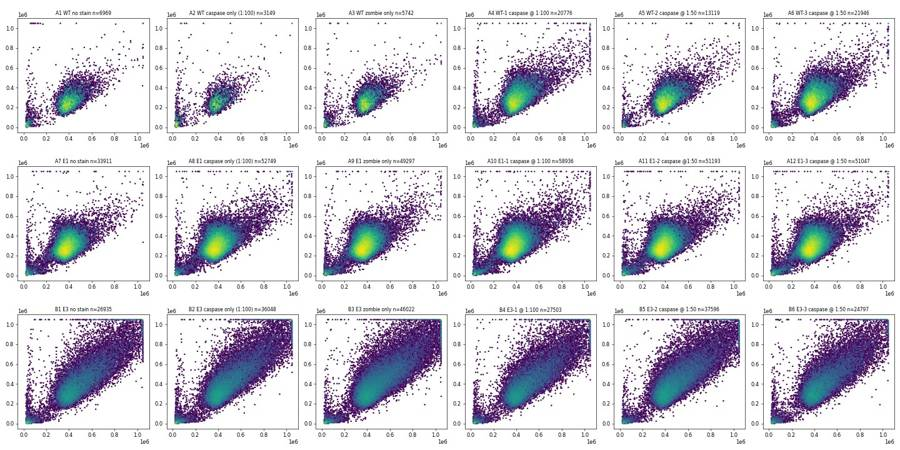
18
tool call · Read
{
"file_path": "/task/work/fsc_ah.png"
}19
tool output
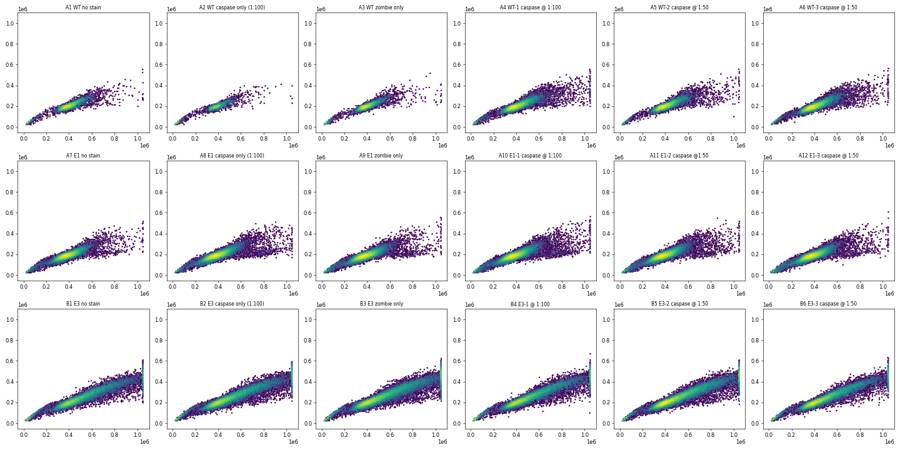
21
agent
Checked the plate and metadata: BL1 is the cleaved caspase-3 AF488 channel (stored label "AAV-GFP" is out of date) and RL3 is Zombie NIR. Next I'm looking at the fluorescence distributions.
22
tool call · Bash
python3 - <<'EOF'
import sys; sys.path.insert(0,'.')
from common import *
import matplotlib; matplotlib.use('Agg'); import matplotlib.pyplot as plt
fig,axs=plt.subplots(3,6,figsize=(24,12))
fig2,axs2=plt.subplots(3,6,figsize=(24,12))
for ax,ax2,(_,r) in zip(axs.flat,axs2.flat,lay.iterrows()):
s,d=load(r.file)
c=d[(d['FSC-A']>150000)&(d['FSC-A']<1.04e6)&(d['SSC-A']>50000)]
ax.hexbin(asinh(c['RL3-A'],300),asinh(c['BL1-A'],150),gridsize=100,bins='log',cmap='viridis',extent=(-3,9,-2,8))
ax.set_title(f"{r.well} {r['sample']} n={len(c)}",fontsize=9); ax.set_xlabel('RL3 asinh/300'); ax.set_ylabel('BL1 asinh/150')
ax2.hist(asinh(c['RL3-A'],300),bins=200,range=(-3,9),histtype='step')
ax2.set_yscale('log'); ax2.set_title(f"{r.well} RL3",fontsize=9)
fig.tight_layout(); fig.savefig('rl3_bl1.png',dpi=60)
fig2.tight_layout(); fig2.savefig('rl3_hist.png',dpi=60)
EOF23
tool output
(Bash completed with no output)
24
tool call · Read
{
"file_path": "/task/work/rl3_bl1.png"
}25
tool output
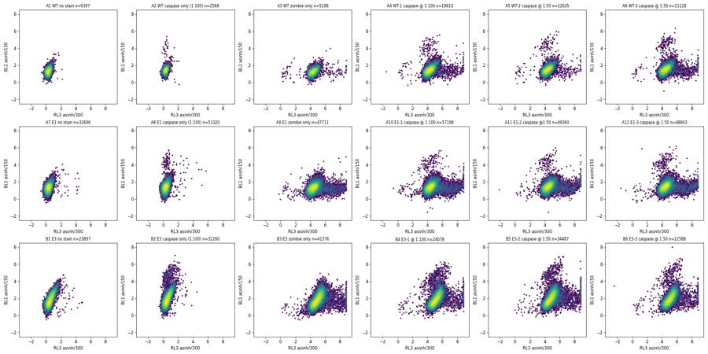
26
tool call · Read
{
"file_path": "/task/work/rl3_hist.png"
}27
tool output
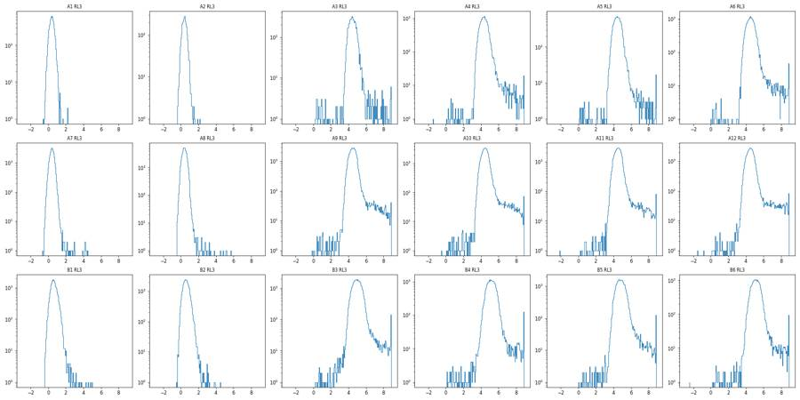
29
tool call · Bash
python3 - <<'EOF'
import sys; sys.path.insert(0,'.')
from common import *
import matplotlib; matplotlib.use('Agg'); import matplotlib.pyplot as plt
wells=['A1','A3','A6','A7','A9','A11','B1','B3','B5']
fig,axs=plt.subplots(3,9,figsize=(36,12))
for j,w in enumerate(wells):
r=lay[lay.well==w].iloc[0]; s,d=load(r.file)
pos=asinh(d['BL1-A'],150)>3.2
axs[0,j].scatter(d['FSC-A'],d['SSC-A'],s=1,c='grey',alpha=.3); axs[0,j].scatter(d['FSC-A'][pos],d['SSC-A'][pos],s=3,c='r')
axs[0,j].set_title(f"{w} {r['sample']} pos={pos.sum()}")
axs[1,j].hexbin(d['SSC-A'],asinh(d['BL1-A'],150),gridsize=100,bins='log',extent=(0,1.05e6,-2,8)); axs[1,j].set_xlabel('SSC-A'); axs[1,j].set_ylabel('BL1')
axs[2,j].hexbin(d['FSC-A'],asinh(d['BL1-A'],150),gridsize=100,bins='log',extent=(0,1.05e6,-2,8)); axs[2,j].set_xlabel('FSC-A')
plt.tight_layout(); plt.savefig('bl1_scatter.png',dpi=50)
EOF30
tool output
(Bash completed with no output)
31
tool call · Read
{
"file_path": "/task/work/bl1_scatter.png"
}32
tool output
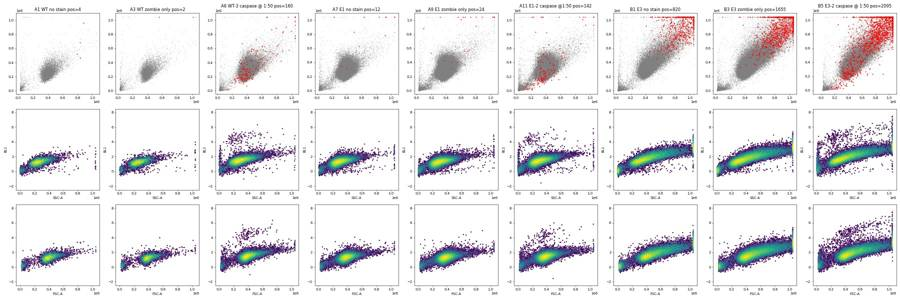
34
tool call · Bash
python3 - <<'EOF'
import sys; sys.path.insert(0,'.')
from common import *
import matplotlib; matplotlib.use('Agg'); import matplotlib.pyplot as plt
fig,axs=plt.subplots(3,6,figsize=(24,12))
for ax,(_,r) in zip(axs.flat,lay.iterrows()):
s,d=load(r.file)
t=d['Time'].values
h,e=np.histogram(t,bins=98,range=(0,98))
ax.plot(e[:-1],h,label='events/s')
ax2=ax.twinx();
# rolling median FSC
o=np.argsort(t);
k=max(len(t)//60,1)
tt=t[o]; f=d['FSC-A'].values[o]; b=asinh(d['RL3-A'].values[o],300)
idx=np.arange(0,len(t)-k,k)
ax2.plot([tt[i:i+k].mean() for i in idx],[np.median(f[i:i+k]) for i in idx],'r',label='FSC med')
ax.set_title(f"{r.well} {r['sample']} n={len(t)}",fontsize=9)
plt.tight_layout(); plt.savefig('time.png',dpi=55)
EOF35
tool output
(Bash completed with no output)
36
tool call · Read
{
"file_path": "/task/work/time.png"
}37
tool output
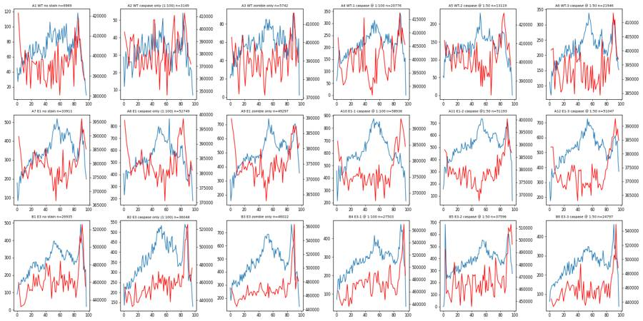
39
agent
No clogs or dry runs in the time traces. Now I'm drawing the viability and cleaved-caspase-3 gates.
40
tool call · Bash
python3 - <<'EOF'
import sys; sys.path.insert(0,'.')
from common import *
import matplotlib; matplotlib.use('Agg'); import matplotlib.pyplot as plt
wells=['A3','A4','A6','A9','A10','A12','B3','B4','B5']
fig,axs=plt.subplots(2,9,figsize=(36,8))
for j,w in enumerate(wells):
r=lay[lay.well==w].iloc[0]; s,d=load(r.file)
c=d[(d['FSC-A']>120000)&(d['FSC-A']<1.04e6)&(d['SSC-A']<1.04e6)]
axs[0,j].hexbin(c['FSC-A'],asinh(c['RL3-A'],300),gridsize=100,bins='log',extent=(0,1.05e6,-1,9)); axs[0,j].set_title(w+' RL3 vs FSC')
axs[1,j].hexbin(c['SSC-A'],asinh(c['RL3-A'],300),gridsize=100,bins='log',extent=(0,1.05e6,-1,9)); axs[1,j].set_title(w+' RL3 vs SSC')
for a in axs[:,j]: a.axhline(6.3,color='r',lw=.5); a.grid(alpha=.3)
plt.tight_layout(); plt.savefig('rl3_scatter.png',dpi=50)
EOF41
tool output
(Bash completed with no output)
42
tool call · Read
{
"file_path": "/task/work/rl3_scatter.png"
}43
tool output
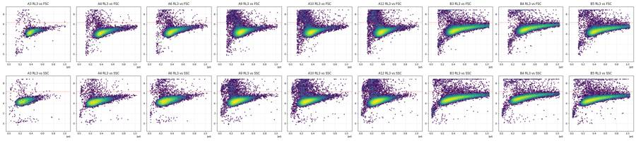
45
tool call · Bash
python3 -c " import flowkit as fk, inspect print(fk.__version__) print(inspect.signature(fk.transforms.AsinhTransform.__init__)) print(inspect.signature(fk.transforms.LogicleTransform.__init__)) print(inspect.signature(fk.gates.PolygonGate.__init__)) print(inspect.signature(fk.gates.RectangleGate.__init__)) print(inspect.signature(fk.Dimension.__init__)) print(inspect.signature(fk.GatingStrategy.add_gate)) print(inspect.signature(fk.export_gatingml)) import numpy as np t=fk.transforms.AsinhTransform(param_t=1048576,param_m=4.0,param_a=0.0) print(t.apply(np.array([[0.],[1000.],[10000.],[100000.]]))) "
46
tool output
1.2.3 (self, param_t, param_m, param_a) (self, param_t, param_w, param_m, param_a) (self, gate_name, dimensions, vertices, use_complement=False) (self, gate_name, dimensions, use_complement=False) (self, dimension_id, compensation_ref='uncompensated', transformation_ref=None, range_min=None, range_max=None) (self, gate, gate_path, sample_id=None) (gating_strategy, file_handle, sample_id=None) [[0. ] [0.24602458] [0.49486196] [0.74485014]]
48
tool call · Bash
cat >> common.py <<'EOF'
TT=1048576.; TM=4.0
def ft(x): # same as flowkit AsinhTransform(T=2^20, M=4, A=0)
return np.arcsinh(np.asarray(x,dtype=float)*np.sinh(TM*np.log(10))/TT)/(TM*np.log(10))
def ftinv(y):
return np.sinh(np.asarray(y)*TM*np.log(10))*TT/np.sinh(TM*np.log(10))
EOF
python3 - <<'EOF'
import sys; sys.path.insert(0,'.')
from common import *
import matplotlib; matplotlib.use('Agg'); import matplotlib.pyplot as plt
fig,axs=plt.subplots(3,6,figsize=(24,12))
for ax,(_,r) in zip(axs.flat,lay.iterrows()):
s,d=load(r.file)
c=d[(d['FSC-A']>150000)&(d['FSC-A']<1.04e6)&(d['SSC-A']<1.04e6)&(ft(d['RL3-A'])<0.62)]
ax.hexbin(c['SSC-A'],ft(c['BL1-A']),gridsize=100,bins='log',extent=(0,1.05e6,-0.1,0.8))
xs=np.array([0,1.04e6]);
for a,b,col in [(0.24,0.12,'r'),(0.22,0.12,'orange'),(0.26,0.12,'m')]:
ax.plot(xs,a+b*xs/1e6,col,lw=.7)
ax.set_title(f"{r.well} {r['sample']}",fontsize=9); ax.grid(alpha=.3)
plt.tight_layout(); plt.savefig('ssc_bl1_t.png',dpi=55)
EOF49
tool output
(Bash completed with no output)
50
tool call · Read
{
"file_path": "/task/work/ssc_bl1_t.png"
}51
tool output
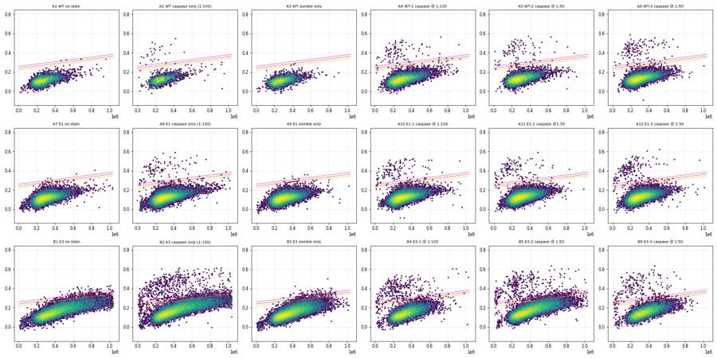
53
tool call · Bash
python3 - <<'EOF'
import sys; sys.path.insert(0,'.')
from common import *
import matplotlib; matplotlib.use('Agg'); import matplotlib.pyplot as plt
fig,axs=plt.subplots(1,3,figsize=(21,7))
for ax,grp in zip(axs,[['A4','A5','A6'],['A10','A11','A12'],['B4','B5','B6']]):
D=pd.concat([load(lay[lay.well==w].file.iloc[0])[1] for w in grp])
pos=(ft(D['BL1-A'])>0.33)&(D['SSC-A']<5e5)
ax.scatter(np.log10(D['FSC-A'].clip(1e3)),np.log10(D['SSC-A'].clip(1e3)),s=1,c='grey',alpha=.2)
ax.scatter(np.log10(D['FSC-A'][pos].clip(1e3)),np.log10(D['SSC-A'][pos].clip(1e3)),s=4,c='r')
ax.set_title(f"{grp} pos={pos.sum()}"); ax.set_xlabel('log FSC-A'); ax.set_ylabel('log SSC-A'); ax.grid()
plt.tight_layout(); plt.savefig('pos_loc.png',dpi=55)
EOF54
tool output
(Bash completed with no output)
55
tool call · Read
{
"file_path": "/task/work/pos_loc.png"
}56
tool output
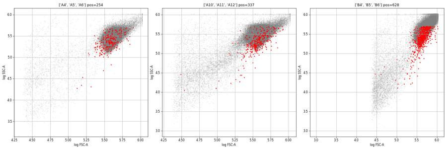
58
thinking
The gating is settled, with singlets and live cells first and then cleaved-caspase-3+ above the autofluorescence band. I'm tuning the singlet gate now.
59
tool call · Bash
python3 - <<'EOF'
import sys; sys.path.insert(0,'.')
from common import *
import matplotlib; matplotlib.use('Agg'); import matplotlib.pyplot as plt
fig,axs=plt.subplots(1,4,figsize=(28,7))
for ax,grp in zip(axs,[['A1','A2','A3','A4','A5','A6'],['A7','A8','A9','A10','A11','A12'],['B1','B2','B3','B4','B5','B6']]):
D=pd.concat([load(lay[lay.well==w].file.iloc[0])[1] for w in grp])
D=D[(D['FSC-A']>150000)&(D['FSC-A']<1.04e6)&(D['SSC-A']>30000)&(D['SSC-A']<1.04e6)]
ax.hexbin(D['FSC-A'],D['FSC-H'],gridsize=150,bins='log',extent=(1e5,1.05e6,0,7e5))
pos=(ft(D['BL1-A'])>0.33)&(D['SSC-A']<5e5)
ax.scatter(D['FSC-A'][pos],D['FSC-H'][pos],s=3,c='r')
poly=np.array([(150000,60000),(450000,170000),(750000,240000),(1040000,280000),(1040000,700000),(150000,140000),(150000,60000)])
ax.plot(poly[:,0],poly[:,1],'w-')
ax.set_title(str(grp)); ax.grid(alpha=.3)
plt.tight_layout(); plt.savefig('singlets.png',dpi=55)
EOF60
tool output
(Bash completed with no output)
61
tool call · Read
{
"file_path": "/task/work/singlets.png"
}62
tool output
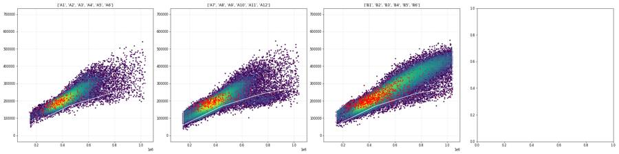
64
tool call · Bash
python3 - <<'EOF'
import sys; sys.path.insert(0,'.')
from common import *
import matplotlib; matplotlib.use('Agg'); import matplotlib.pyplot as plt
fig,axs=plt.subplots(2,3,figsize=(24,14))
sing=np.array([(150000,70000),(400000,160000),(700000,240000),(1040000,300000),(1040000,700000),(150000,170000)])
from matplotlib.path import Path
P=Path(sing)
live_line=np.array([(150000,0.66),(500000,0.70),(1040000,0.75)])
for j,grp in enumerate([['A3','A4','A5','A6'],['A9','A10','A11','A12'],['B3','B4','B5','B6']]):
D=pd.concat([load(lay[lay.well==w].file.iloc[0])[1] for w in grp])
D=D[(D['FSC-A']>150000)&(D['FSC-A']<1.04e6)&(D['SSC-A']>30000)&(D['SSC-A']<1.04e6)]
D=D[P.contains_points(D[['FSC-A','FSC-H']].values)]
y=ft(D['RL3-A'])
axs[0,j].hexbin(D['FSC-A'],y,gridsize=150,bins='log',extent=(1e5,1.05e6,-0.1,1.05))
axs[0,j].plot(live_line[:,0],live_line[:,1],'r-')
pos=(ft(D['BL1-A'])>0.33)&(D['SSC-A']<5e5)
axs[0,j].scatter(D['FSC-A'][pos],y[pos],s=3,c='r')
axs[1,j].hist(y,bins=300,range=(0.3,1.05),histtype='step',log=True); axs[1,j].hist(y[pos],bins=300,range=(0.3,1.05),histtype='step',log=True,color='r')
axs[0,j].set_title(str(grp)); axs[0,j].grid(alpha=.3); axs[1,j].grid(alpha=.3)
plt.tight_layout(); plt.savefig('live.png',dpi=55)
EOF65
tool output
(Bash completed with no output)
66
tool call · Read
{
"file_path": "/task/work/live.png"
}67
tool output
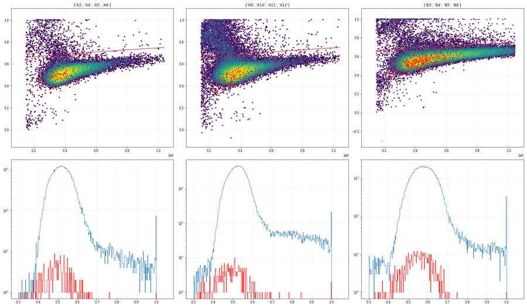
69
tool call · Bash
python3 - <<'EOF'
import sys; sys.path.insert(0,'.')
from common import *
from matplotlib.path import Path
P=Path(np.array([(150000,70000),(400000,160000),(700000,240000),(1040000,300000),(1040000,700000),(150000,170000)]))
L=Path(np.array([(0,-0.5),(0,0.66),(150000,0.66),(500000,0.70),(1040000,0.75),(1.1e6,0.75),(1.1e6,-0.5)]))
def prep(w):
d=load(lay[lay.well==w].file.iloc[0])[1]
d=d[(d['FSC-A']>150000)&(d['FSC-A']<1.04e6)&(d['SSC-A']>30000)&(d['SSC-A']<1.04e6)]
d=d[P.contains_points(d[['FSC-A','FSC-H']].values)]
d=d[L.contains_points(np.c_[d['FSC-A'],ft(d['RL3-A'])])]
return d
bins=np.arange(0,1.1e6,1e5)
for line,ctrl in [('WT',['A1','A3']),('E1',['A7','A9']),('E3',['B1','B3'])]:
D=pd.concat([prep(w) for w in ctrl]); y=ft(D['BL1-A'])
b=np.digitize(D['SSC-A'],bins)
print(line, len(D))
for i in range(1,11):
m=b==i
if m.sum()>50: print(' SSC %4.0fk-%4.0fk n=%6d p99=%.3f p99.9=%.3f max=%.3f'%(bins[i-1]/1e3,bins[i]/1e3,m.sum(),np.percentile(y[m],99),np.percentile(y[m],99.9),y[m].max()))
EOF70
tool output
WT 11361 SSC 100k- 200k n= 1897 p99=0.148 p99.9=0.171 max=0.181 SSC 200k- 300k n= 5633 p99=0.178 p99.9=0.217 max=0.241 SSC 300k- 400k n= 2758 p99=0.197 p99.9=0.234 max=0.281 SSC 400k- 500k n= 796 p99=0.236 p99.9=0.290 max=0.318 SSC 500k- 600k n= 172 p99=0.266 p99.9=0.314 max=0.323 SSC 600k- 700k n= 52 p99=0.293 p99.9=0.327 max=0.330 E1 76759 SSC 0k- 100k n= 200 p99=0.126 p99.9=0.127 max=0.127 SSC 100k- 200k n= 5210 p99=0.159 p99.9=0.195 max=0.240 SSC 200k- 300k n= 37409 p99=0.176 p99.9=0.222 max=0.292 SSC 300k- 400k n= 25505 p99=0.202 p99.9=0.253 max=0.318 SSC 400k- 500k n= 7062 p99=0.233 p99.9=0.290 max=0.341 SSC 500k- 600k n= 995 p99=0.270 p99.9=0.359 max=0.361 SSC 600k- 700k n= 245 p99=0.303 p99.9=0.353 max=0.368 SSC 700k- 800k n= 77 p99=0.306 p99.9=0.311 max=0.312 E3 61837 SSC 0k- 100k n= 268 p99=0.117 p99.9=0.185 max=0.203 SSC 100k- 200k n= 1680 p99=0.171 p99.9=0.233 max=0.250 SSC 200k- 300k n= 14335 p99=0.187 p99.9=0.232 max=0.307 SSC 300k- 400k n= 16113 p99=0.232 p99.9=0.276 max=0.335 SSC 400k- 500k n= 11330 p99=0.271 p99.9=0.320 max=0.424 SSC 500k- 600k n= 7650 p99=0.305 p99.9=0.347 max=0.376 SSC 600k- 700k n= 4759 p99=0.336 p99.9=0.398 max=0.426 SSC 700k- 800k n= 2902 p99=0.359 p99.9=0.408 max=0.497 SSC 800k- 900k n= 1624 p99=0.381 p99.9=0.411 max=0.429 SSC 900k-1000k n= 952 p99=0.391 p99.9=0.452 max=0.460
72
tool call · Bash
cat >> common.py <<'EOF'
from matplotlib.path import Path
SING=np.array([(150000,70000),(400000,160000),(700000,240000),(1040000,300000),(1040000,700000),(150000,170000)])
LIVE=np.array([(0,-0.5),(0,0.66),(150000,0.66),(500000,0.70),(1040000,0.75),(1.1e6,0.75),(1.1e6,-0.5)])
def prep(w, live=True):
d=load(lay[lay.well==w].file.iloc[0])[1]
d=d[(d['FSC-A']>150000)&(d['FSC-A']<1.04e6)&(d['SSC-A']>30000)&(d['SSC-A']<1.04e6)]
d=d[Path(SING).contains_points(d[['FSC-A','FSC-H']].values)]
if live: d=d[Path(LIVE).contains_points(np.c_[d['FSC-A'],ft(d['RL3-A'])])]
return d
EOF
python3 - <<'EOF'
import sys; sys.path.insert(0,'.')
from common import *
import matplotlib; matplotlib.use('Agg'); import matplotlib.pyplot as plt
CAS=np.array([(30000,0.27),(250000,0.29),(450000,0.34),(650000,0.42),(1040000,0.50),(1040000,1.05),(30000,1.05)])
fig,axs=plt.subplots(2,3,figsize=(24,14))
for j,(line,un,st) in enumerate([('WT',['A1','A3'],['A2','A4','A5','A6']),('E1',['A7','A9'],['A8','A10','A11','A12']),('E3',['B1','B3'],['B2','B4','B5','B6'])]):
for i,grp in enumerate([un,st]):
D=pd.concat([prep(w) for w in grp]); y=ft(D['BL1-A'])
inn=Path(CAS).contains_points(np.c_[D['SSC-A'],y])
axs[i,j].hexbin(D['SSC-A'],y,gridsize=150,bins='log',extent=(0,1.05e6,-0.1,0.8))
axs[i,j].plot(CAS[:,0],CAS[:,1],'r-')
axs[i,j].set_title(f"{line} {grp} n={len(D)} pos={inn.sum()} ({100*inn.mean():.2f}%)"); axs[i,j].grid(alpha=.3)
plt.tight_layout(); plt.savefig('casgate.png',dpi=55)
EOF73
tool output
(Bash completed with no output)
74
tool call · Read
{
"file_path": "/task/work/casgate.png"
}75
tool output
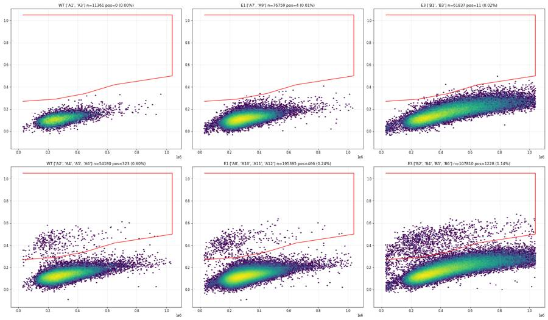
77
tool call · Bash
python3 - <<'EOF'
import sys; sys.path.insert(0,'.')
from common import *
import matplotlib; matplotlib.use('Agg'); import matplotlib.pyplot as plt
bins=np.arange(0,1.1e6,1e5)
fig,axs=plt.subplots(3,10,figsize=(40,10))
for j,(line,un,st) in enumerate([('WT',['A1','A3'],['A2','A4','A5','A6']),('E1',['A7','A9'],['A8','A10','A11','A12']),('E3',['B1','B3'],['B2','B4','B5','B6'])]):
U=pd.concat([prep(w) for w in un]); S=pd.concat([prep(w) for w in st])
for i in range(10):
ax=axs[j,i]
for D,c in [(U,'k'),(S,'r')]:
m=(D['SSC-A']>=bins[i])&(D['SSC-A']<bins[i]+1e5)
if m.sum()>0: ax.hist(ft(D['BL1-A'][m]),bins=80,range=(-0.05,0.7),histtype='step',color=c,density=True,log=True)
ax.set_title(f"{line} SSC {bins[i]/1e3:.0f}k",fontsize=9); ax.grid(alpha=.3)
plt.tight_layout(); plt.savefig('bl1_bins.png',dpi=45)
EOF78
tool output
(Bash completed with no output)
79
tool call · Read
{
"file_path": "/task/work/bl1_bins.png"
}80
tool output
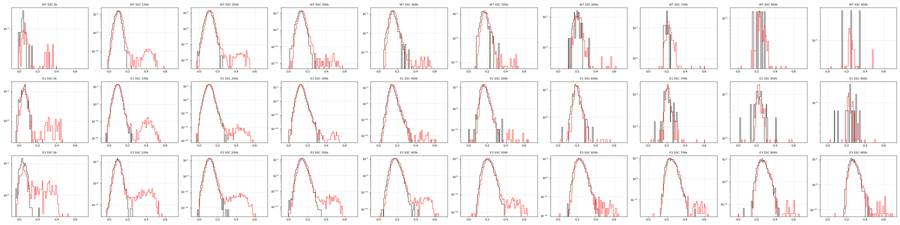
82
agent
Gates look clean: background in no-antibody controls is ≤0.02% while stained wells show a distinct cleaved-caspase-3+ cluster. Building the FlowKit strategy now and computing counts.
83
tool call · Bash
mkdir -p /task/outputs && cd /task/work && cat > build_gates.py <<'EOF'
import sys; sys.path.insert(0,'/task/work')
import flowkit as fk, numpy as np, pandas as pd
from common import lay, RAW
SAT=1040000.
g=fk.GatingStrategy()
asinh=fk.transforms.AsinhTransform(param_t=1048576.0, param_m=4.0, param_a=0.0)
g.add_transform('asinh_t', asinh)
U='uncompensated'
# 1 cells: FSC/SSC rectangle-like polygon excluding debris (FSC-A<150k, SSC-A<30k) and saturated scatter
cells=fk.gates.RectangleGate('cells',[fk.Dimension('FSC-A',U,range_min=150000.,range_max=SAT),
fk.Dimension('SSC-A',U,range_min=30000.,range_max=SAT)])
g.add_gate(cells,('root',))
# 2 singlets: FSC-A vs FSC-H diagonal band
SING=[(150000,70000),(400000,160000),(700000,240000),(1040000,300000),(1040000,700000),(150000,170000)]
sing=fk.gates.PolygonGate('singlets',[fk.Dimension('FSC-A',U),fk.Dimension('FSC-H',U)],[list(map(float,v)) for v in SING])
g.add_gate(sing,('root','cells'))
# 3 live: Zombie NIR (RL3-A, asinh) below size-dependent dead boundary
LIVE=[(0,-0.5),(0,0.66),(150000,0.66),(500000,0.70),(1040000,0.75),(1100000,0.75),(1100000,-0.5)]
live=fk.gates.PolygonGate('live',[fk.Dimension('FSC-A',U),fk.Dimension('RL3-A',U,transformation_ref='asinh_t')],[list(map(float,v)) for v in LIVE])
g.add_gate(live,('root','cells','singlets'))
DEAD=[(0,0.66),(150000,0.66),(500000,0.70),(1040000,0.75),(1100000,0.75),(1100000,1.2),(0,1.2)]
dead=fk.gates.PolygonGate('dead',[fk.Dimension('FSC-A',U),fk.Dimension('RL3-A',U,transformation_ref='asinh_t')],[list(map(float,v)) for v in DEAD])
g.add_gate(dead,('root','cells','singlets'))
# 4 casp3_pos: cleaved caspase-3 AF488 (BL1-A, asinh) above SSC-dependent autofluorescence band
CAS=[(30000,0.26),(250000,0.28),(450000,0.34),(650000,0.42),(1040000,0.50),(1040000,1.2),(30000,1.2)]
cas=fk.gates.PolygonGate('casp3_pos',[fk.Dimension('SSC-A',U),fk.Dimension('BL1-A',U,transformation_ref='asinh_t')],[list(map(float,v)) for v in CAS])
g.add_gate(cas,('root','cells','singlets','live'))
with open('/task/outputs/gates.xml','wb') as fh: fk.export_gatingml(g,fh)
print('saved')
EOF
python3 build_gates.py && cat > count.py <<'EOF'
import sys; sys.path.insert(0,'/task/work')
import flowkit as fk, numpy as np, pandas as pd
from common import lay, RAW
g=fk.parse_gating_xml('/task/outputs/gates.xml')
print(g.get_gate_hierarchy(output='ascii'))
POPS=[('all_events','other','none'),('cells','cells','all_events'),('singlets','singlets','cells'),('live','live','singlets'),('dead','other','singlets'),('casp3_pos','marker_positive','live')]
rows=[]
for _,r in lay.iterrows():
s=fk.Sample(RAW+r.file)
res=g.gate_sample(s)
c={'all_events':s.event_count}
for p,_,_ in POPS[1:]: c[p]=int(res.get_gate_count(p))
for p,role,par in POPS:
pc=c.get(par) if par!='none' else None
rows.append(dict(file=r.file,well=r.well,population=p,role=role,parent=par,count=int(c[p]),
pct_of_parent=('' if (pc is None or pc==0) else round(100*c[p]/pc,4))))
df=pd.DataFrame(rows,columns=['file','well','population','role','parent','count','pct_of_parent'])
df.to_csv('/task/outputs/counts.csv',index=False)
w=df.pivot(index='well',columns='population',values='count').loc[lay.well]
w['pct_cells']=100*w.cells/w.all_events; w['pct_sing']=100*w.singlets/w.cells; w['pct_live']=100*w.live/w.singlets
w['pct_dead']=100*w.dead/w.singlets; w['pct_casp']=100*w.casp3_pos/w.live
w['sample']=lay.set_index('well').loc[w.index,'sample']
pd.set_option('display.width',200)
print(w[['sample','all_events','cells','singlets','live','dead','casp3_pos','pct_cells','pct_sing','pct_live','pct_dead','pct_casp']].round(3).to_string())
EOF
python3 count.py84
tool output
saved
root
╰── cells
╰── singlets
├── live
│ ╰── casp3_pos
╰── dead
population sample all_events cells singlets live dead casp3_pos pct_cells pct_sing pct_live pct_dead pct_casp
well
A1 WT no stain 6969 6397 6308 6308 0 0 91.792 98.609 100.000 0.000 0.000
A2 WT caspase only (1:100) 3149 2570 2542 2542 0 26 81.613 98.911 100.000 0.000 1.023
A3 WT zombie only 5742 5203 5133 5053 80 0 90.613 98.655 98.441 1.559 0.000
A4 WT-1 caspase @ 1:100 20776 19818 19405 19086 319 94 95.389 97.916 98.356 1.644 0.493
A5 WT-2 caspase @ 1:50 13119 12631 12434 12301 133 79 96.280 98.440 98.930 1.070 0.642
A6 WT-3 caspase @ 1:50 21946 21119 20694 20251 443 128 96.232 97.988 97.859 2.141 0.632
A7 E1 no stain 33911 32712 31868 31868 0 2 96.464 97.420 100.000 0.000 0.006
A8 E1 caspase only (1:100) 52749 51326 49582 49582 0 98 97.302 96.602 100.000 0.000 0.198
A9 E1 zombie only 49297 47737 46127 44891 1236 2 96.836 96.627 97.320 2.680 0.004
A10 E1-1 caspase @ 1:100 58936 57206 55086 53625 1461 110 97.065 96.294 97.348 2.652 0.205
A11 E1-2 caspase @1:50 51193 49358 47706 46498 1207 102 96.416 96.653 97.468 2.530 0.219
A12 E1-3 caspase @ 1:50 51047 48871 47215 45690 1525 162 95.737 96.611 96.770 3.230 0.355
B1 E3 no stain 26935 23542 22977 22977 0 3 87.403 97.600 100.000 0.000 0.013
B2 E3 caspase only (1:100) 36048 31907 31120 31120 0 402 88.513 97.533 100.000 0.000 1.292
B3 E3 zombie only 46022 40851 39761 38860 901 10 88.764 97.332 97.734 2.266 0.026
B4 E3-1 @ 1:100 27503 24356 23814 23181 633 339 88.558 97.775 97.342 2.658 1.462
B5 E3-2 caspase @ 1:50 37596 34034 33117 32340 777 303 90.526 97.306 97.654 2.346 0.937
B6 E3-3 caspase @ 1:50 24797 22315 21753 21169 584 211 89.991 97.482 97.315 2.685 0.99786
thinking
Cleaved-caspase-3+ cells are about 0.2–1.5% of live singlets versus ≤0.03% in controls. I'm now testing gate sensitivity and comparing the two antibody dilutions.
87
tool call · Bash
python3 - <<'EOF'
import sys; sys.path.insert(0,'.')
from common import *
import flowkit as fk
g=fk.parse_gating_xml('/task/outputs/gates.xml')
pd.set_option('display.width',220)
rows=[]
for _,r in lay.iterrows():
s=fk.Sample(RAW+r.file); res=g.gate_sample(s)
d=s.as_dataframe(source='raw'); d.columns=[c[0] for c in d.columns]
live=res.get_gate_membership('live'); pos=res.get_gate_membership('casp3_pos')
neg=live&~pos
bl=d['BL1-A'].values; ssc=d['SSC-A'].values; rl=d['RL3-A'].values
# alt gate: fixed threshold ft>0.35 and SSC<450k
alt=live&(ft(bl)>0.35)&(ssc<450000)
alt2=live&(ft(bl)>0.30)
rows.append(dict(well=r.well,sample=r['sample'][:22],n_live=live.sum(),pos=pos.sum(),pct=100*pos.sum()/live.sum(),
pct_alt=100*alt.sum()/live.sum(), pct_fixed030=100*alt2.sum()/live.sum(),
med_pos=np.median(bl[pos]) if pos.sum() else np.nan, med_neg=np.median(bl[neg]), rSD_neg=(np.percentile(bl[neg],84)-np.median(bl[neg])),
ssc_pos=np.median(ssc[pos]) if pos.sum() else np.nan, ssc_neg=np.median(ssc[neg]),
rl3_pos=np.median(rl[pos]) if pos.sum() else np.nan, rl3_neg=np.median(rl[neg]),
ci_lo=100*(0.5*__import__('scipy.stats',fromlist=['chi2']).chi2.ppf(0.025,2*pos.sum()))/live.sum() if pos.sum() else 0,
ci_hi=100*(0.5*__import__('scipy.stats',fromlist=['chi2']).chi2.ppf(0.975,2*pos.sum()+2))/live.sum()))
R=pd.DataFrame(rows); R['SI']=(R.med_pos-R.med_neg)/(2*R.rSD_neg)
print(R.round(3).to_string())
R.to_csv('perwell_stats.csv',index=False)
EOF88
tool output
well sample n_live pos pct pct_alt pct_fixed030 med_pos med_neg rSD_neg ssc_pos ssc_neg rl3_pos rl3_neg ci_lo ci_hi SI 0 A1 WT no stain 6308 0 0.000 0.000 0.063 NaN 253.0 118.0 NaN 262749.0 NaN 115.0 0.000 0.058 NaN 1 A2 WT caspase only (1:100 2542 26 1.023 0.747 0.983 4063.5 287.0 123.0 186358.5 260770.0 96.5 119.0 0.668 1.499 15.352 2 A3 WT zombie only 5053 0 0.000 0.000 0.000 NaN 244.0 107.0 NaN 267435.0 NaN 12482.0 0.000 0.073 NaN 3 A4 WT-1 caspase @ 1:100 19086 94 0.493 0.351 0.550 5161.5 289.0 129.0 224058.0 284629.5 9007.0 11193.5 0.398 0.603 18.886 4 A5 WT-2 caspase @ 1:50 12301 79 0.642 0.504 0.675 6136.0 313.0 137.0 245194.0 277352.0 10517.0 12493.0 0.508 0.800 21.252 5 A6 WT-3 caspase @ 1:50 20251 128 0.632 0.469 0.711 6440.5 321.0 136.0 240635.5 289808.0 13202.0 13514.0 0.527 0.752 22.498 6 A7 E1 no stain 31868 2 0.006 0.000 0.028 1908.5 262.0 107.0 332768.5 282672.5 383.0 120.0 0.001 0.023 7.694 7 A8 E1 caspase only (1:100 49582 98 0.198 0.139 0.208 4817.0 275.0 114.0 208510.0 290223.5 129.5 116.0 0.160 0.241 19.921 8 A9 E1 zombie only 44891 2 0.004 0.000 0.040 2180.5 255.0 106.0 359373.0 293087.0 14439.5 12961.0 0.001 0.016 9.083 9 A10 E1-1 caspase @ 1:100 53625 110 0.205 0.147 0.220 4736.5 278.0 115.0 214790.5 293446.0 10356.0 12574.0 0.169 0.247 19.385 10 A11 E1-2 caspase @1:50 46498 102 0.219 0.161 0.234 4955.5 294.0 122.0 197883.5 292473.0 10624.5 13286.0 0.179 0.266 19.105 11 A12 E1-3 caspase @ 1:50 45690 162 0.355 0.260 0.363 4897.5 291.0 124.0 189936.0 290211.0 9771.5 13028.0 0.302 0.414 18.575 12 B1 E3 no stain 22977 3 0.013 0.000 1.797 1761.0 400.5 403.5 285110.0 389339.5 313.0 181.0 0.003 0.038 1.686 13 B2 E3 caspase only (1:100 31120 402 1.292 0.752 3.705 5827.0 446.0 444.0 306603.5 383761.0 166.5 176.0 1.169 1.424 6.060 14 B3 E3 zombie only 38860 10 0.026 0.005 1.909 2799.0 396.0 415.0 425294.0 389439.0 22685.0 20756.0 0.012 0.047 2.895 15 B4 E3-1 @ 1:100 23181 339 1.462 0.807 3.473 5078.0 427.5 417.5 294763.0 383065.0 21177.0 25408.0 1.311 1.627 5.569 16 B5 E3-2 caspase @ 1:50 32340 303 0.937 0.560 3.602 6976.0 471.0 455.0 282784.0 389443.0 14426.0 17876.0 0.834 1.049 7.148 17 B6 E3-3 caspase @ 1:50 21169 211 0.997 0.557 3.330 7033.0 467.0 436.0 310842.0 391407.5 20666.0 24046.5 0.867 1.141 7.530
90
thinking
The sensitivity check confirms the E3 > WT > E1 ordering under a stricter gate, with the E3 vs WT gap narrowing to about 1.4×. Next I'll load the charting guidance before making the figure.
91
tool call · Skill
{
"skill": "dataviz"
}92
tool output
Launching skill: dataviz
93
tool call · Bash
cd /tmp/claude-0/bundled-skills/2.1.322/8aac77a965739d28b6ebda85d3fc7d57/dataviz && sed -n 1,200p references/palette.md | head -120; ls scripts
94
tool output
# Reference palette
This is the **reference instance** of the data-viz method: every parameter the
method needs, filled in with a validated default palette. The rest of the skill
is system-agnostic - **to target your brand, substitute this file's values** and
re-run the validator. Nothing else changes.
## How to use these values
Everything below is plain hex. In an HTML chart, **define the slots you use as
CSS custom properties in a local `<style>` block** at the top of the file, then
reference them by role throughout - so the light/dark values swap in one place,
and the chart body is written against roles rather than raw hex:
```css
.viz-root {
color-scheme: light;
--surface-1: #fcfcfb; /* chart surface */
--text-primary: #0b0b0b;
--text-secondary: #52514e;
--series-1: #2a78d6; /* categorical slot 1 */
/* ...only the roles this chart uses */
}
@media (prefers-color-scheme: dark) {
:root:where(:not([data-theme="light"])) .viz-root {
color-scheme: dark;
--surface-1: #1a1a19;
--text-primary: #f0efec;
--text-secondary: #c3c2b7;
--series-1: #3987e5;
}
}
:root[data-theme="dark"] .viz-root {
color-scheme: dark;
--surface-1: #1a1a19;
--text-primary: #f0efec;
--text-secondary: #c3c2b7;
--series-1: #3987e5;
}
```
Declare the dark values under both scopes as above - the media query covers
the OS setting; the `data-theme` scope covers the viewer's theme toggle,
which must win both ways (the `:not(...)` guard lets a light stamp beat
OS-dark; `:where()` keeps the media block below the toggle scope).
## Categorical palette
Both modes are selected. The dark column is the same eight hues stepped for the
dark surface, not a separate palette:
| Slot | Hue | Light | Dark |
|------|-----|-------|------|
| 1 | blue | `#2a78d6` | `#3987e5` |
| 2 | orange | `#eb6834` | `#d95926` |
| 3 | aqua | `#1baf7a` | `#199e70` |
| 4 | yellow | `#eda100` | `#c98500` |
| 5 | magenta | `#e87ba4` | `#d55181` |
| 6 | green | `#008300` | `#008300` |
| 7 | violet | `#6250d6` | `#9085e9` |
| 8 | red | `#e34948` | `#e66767` |
This order passes every hard gate in both modes on the default *adjacent*
pairlist (stacks, bars, lines): worst adjacent CVD Delta E 9.1 light / 8.4 dark
(OKLab ×100, >=8 target), worst adjacent normal-vision Delta E 19.6 light / 19.3
dark (>=15 floor). Under `--pairs all` (scatter, bubble, choropleth, small
multiples) the full eight cannot clear the floors - with all 28 pairs in
play no ordering can (the pairlist no longer depends on order), and
re-stepping is off the table by the documented-palette rule - so those
chart forms carry a series cap: **the first three slots validate all-pairs
in both modes** (worst pair CVD Delta E 9.2 light / 9.4 dark, normal-vision 24.0
light / 20.9 dark - clear of the CVD warn band). Past three, fold to "Other" or
facet: the fourth slot puts yellow and orange on screen
together, and that pair fails the all-pairs floors (normal-vision 13.7
light; CVD 4.8 dark). Three light-mode slots (magenta, yellow, aqua)
sit below 3:1 contrast on the light surface: the **relief rule** applies (ship
visible direct labels or the table view). The dark steps were chosen for the
dark band (OKLCH L ~ 0.48-0.67, >= 3:1 on the dark surface) and validated as a
set. (Ordering history: adopted July 2026 for its more harmonious opening -
the same eight hues and steps as its predecessor, re-ordered, zero hex
changes. The predecessor validated its first FOUR slots all-pairs, with its
dark run in the 6-8 CVD warn band, so secondary encoding was required there;
this order deliberately trades that fourth slot - yellow now sits beside orange -
for better-looking leading colors. Revisit the trade if yellow<->orange
confusion shows up in real charts with four or more series; undoing it is a
pure re-order. Light slot 7 has since been lightened, `#4a3aa7` -> `#6250d6`
(August 2026); the adjacent-pair figures above are unchanged by that move, the
non-adjacent blue<->violet pair now sits below both floors under `--pairs all`
(normal-vision 10.5, CVD 4.5 - inside the range the series cap already
excludes), and the order enumeration was run with the earlier value.) When you
swap in your own ramps, hold your palette to the full gate.
The slot **ordering** is the CVD-safety mechanism, not cosmetic - candidate
orderings were enumerated and only those clearing every adjacent gate in both
modes kept (see `color-formula.md` § Themes); this default is one of the
passing orders, picked among them for its opening colors. When you swap in
your brand's hues, do the same: run the validator on candidate orderings and
choose only among the passing ones.
## Sequential hue
Default single hue: **blue**, light->dark. When two sequential contexts appear at
once, the second takes the next categorical slot's hue (orange), each as its own
one-hue ramp.
| step | hex | step | hex | step | hex | step | hex |
|---|---|---|---|---|---|---|---|
| 100 | `#cde2fb` | 250 | `#86b6ef` | 400 | `#3987e5` | 550 | `#1c5cab` |
| 150 | `#b7d3f6` | 300 | `#6da7ec` | 450 | `#2a78d6` | 600 | `#184f95` |
| 200 | `#9ec5f4` | 350 | `#5598e7` | 500 | `#256abf` | 650 | `#104281` |
| | | | | | | 700 | `#0d366b` |
The full 100->700 range is for **sequential** encoding (continuous magnitude -
heatmaps, choropleths) where the lightest step means "near zero" and is allowed
to recede toward the surface. For an **ordinal** ramp (discrete ordered marks -
funnel stages, tiers - validated with `--ordinal`), the step nearest the surface
must still clear 2:1: on light, start no lighter than **step 250** (`#86b6ef`,
2.06:1); on dark, go no darker than **step 600** (`#184f95`, 2.15:1).
## Diverging pair
validate_palette.js
validate_palette.py
Shell cwd was reset to /task96
thinking
I'm assigning the three cell lines to categorical slots 1–3 (blue, orange, aqua), since those are validated for all pairs. Next I'll gather QC evidence on scatter saturation and event-rate stability for the flags.
97
tool call · Bash
cd /task/work && python3 - <<'EOF'
import sys; sys.path.insert(0,'.')
from common import *
rows=[]
for _,r in lay.iterrows():
s,d=load(r.file)
sat=((d['FSC-A']>=1040000)|(d['SSC-A']>=1040000)).mean()*100
h,_=np.histogram(d['Time'],bins=19,range=(2,97)) # 5 s bins, skip first/last 2 s
rows.append(dict(well=r.well,n=len(d),sat_pct=round(sat,2),rate_min=h.min()/5,rate_max=h.max()/5,rate_cv=round(h.std()/h.mean()*100,1),
rate_med=np.median(h)/5, rl3_sat=round((d['RL3-A']>=1048000).mean()*100,2),bl1_sat=round((d['BL1-A']>=1048000).mean()*100,3), vol=s.metadata['vol']))
R=pd.DataFrame(rows); print(R.to_string()); R.to_csv('qc.csv',index=False)
EOF98
tool output
well n sat_pct rate_min rate_max rate_cv rate_med rl3_sat bl1_sat vol 0 A1 6969 0.32 35.0 100.0 23.0 70.4 0.00 0.0 164000 1 A2 3149 0.38 19.2 42.8 17.6 34.6 0.00 0.0 163000 2 A3 5742 0.33 33.4 78.6 19.2 59.2 0.10 0.0 162000 3 A4 20776 0.48 150.0 304.8 19.8 217.4 0.09 0.0 162000 4 A5 13119 0.24 79.0 186.6 19.8 132.6 0.13 0.0 162000 5 A6 21946 0.29 131.4 312.0 18.6 225.2 0.19 0.0 164000 6 A7 33911 0.13 185.4 484.4 21.7 334.4 0.00 0.0 164000 7 A8 52749 0.15 374.2 760.2 20.7 534.2 0.00 0.0 164000 8 A9 49297 0.13 289.8 685.6 18.9 516.2 0.07 0.0 164000 9 A10 58936 0.17 421.4 838.6 20.1 572.8 0.11 0.0 164000 10 A11 51193 0.16 343.6 714.6 17.3 519.8 0.14 0.0 162000 11 A12 51047 0.14 327.4 691.0 16.7 536.2 0.16 0.0 164000 12 B1 26935 4.56 152.2 411.8 23.5 278.2 0.00 0.0 162000 13 B2 36048 4.18 226.8 508.0 22.5 392.4 0.00 0.0 164000 14 B3 46022 5.13 296.6 666.4 22.9 486.2 0.32 0.0 164000 15 B4 27503 4.81 168.4 408.0 20.9 288.8 0.47 0.0 162000 16 B5 37596 5.03 252.0 516.8 18.7 374.4 0.37 0.0 164000 17 B6 24797 4.09 143.8 366.4 21.9 264.6 0.38 0.0 162000
100
agent
E3 wells have 4.1–5.1% of events at the FSC/SSC ceiling (WT and E1 ≤0.5%), and event rates are steady with no clogs. Writing the flags, condition summary and figure now.
101
tool call · Bash
cat > outputs.py <<'EOF'
import sys; sys.path.insert(0,'/task/work')
import pandas as pd, numpy as np
lay=pd.read_csv('/task/inputs/plate_layout.csv')
C=pd.read_csv('/task/outputs/counts.csv')
qc=pd.read_csv('qc.csv').set_index('well')
W=C.pivot(index='well',columns='population',values='count')
pct=100*W.casp3_pos/W.live
# ---------- flags ----------
fl=[]
for _,r in lay.iterrows():
w=r.well; q=qc.loc[w]
if w=='A2':
fl.append((r.file,w,'too_few_events',f"Only {int(W.loc[w,'all_events'])} events acquired ({int(W.loc[w,'live'])} singlets; median rate {q.rate_med:.0f} ev/s vs 133-573 ev/s in stained wells) giving just {int(W.loc[w,'casp3_pos'])} casp3_pos events; usable only as a qualitative AF488 single-stain control (no Zombie NIR), not used for the main metric",'keep_with_note'))
elif w in ('A1','A3'):
fl.append((r.file,w,'too_few_events',f"Low cell recovery: {int(W.loc[w,'all_events'])} events / {int(W.loc[w,'singlets'])} singlets (E1/E3 controls 26935-49297 events); still adequate as a background control (0 casp3_pos events, upper 95% CI {100*3.69/W.loc[w,'live']:.3f}% of live)",'keep_with_note'))
elif w.startswith('B'):
fl.append((r.file,w,'saturation',f"{q.sat_pct:.2f}% of events at the FSC-A/SSC-A ceiling (>=1,040,000; WT/E1 wells 0.13-0.48%) - larger E3 cells partly off-scale at FSC 20/SSC 290; these events are removed by the cells gate, so the E3 metric under-represents the largest cells",'keep_with_note'))
else:
fl.append((r.file,w,'none','','keep'))
pd.DataFrame(fl,columns=['file','well','issue_type','evidence','decision']).to_csv('/task/outputs/flags.csv',index=False)
# ---------- condition summary ----------
MET='casp3_pos / live x 100 (% of live singlets that are cleaved caspase-3 AF488 positive)'
MET_NZ='casp3_pos / live x 100 (%); no Zombie NIR in these wells so the live gate retains all singlets (= % of singlets)'
conds=[
('WT_casp_all',['A4','A5','A6'],MET),('E1_casp_all',['A10','A11','A12'],MET),('E3_casp_all',['B4','B5','B6'],MET),
('WT_casp_1to100',['A4'],MET),('WT_casp_1to50',['A5','A6'],MET),
('E1_casp_1to100',['A10'],MET),('E1_casp_1to50',['A11','A12'],MET),
('E3_casp_1to100',['B4'],MET),('E3_casp_1to50',['B5','B6'],MET),
('WT_noAb_zombie_only',['A3'],MET),('E1_noAb_zombie_only',['A9'],MET),('E3_noAb_zombie_only',['B3'],MET),
('WT_unstained',['A1'],MET_NZ),('E1_unstained',['A7'],MET_NZ),('E3_unstained',['B1'],MET_NZ),
('WT_casp_only_1to100_noZombie',['A2'],MET_NZ),('E1_casp_only_1to100_noZombie',['A8'],MET_NZ),('E3_casp_only_1to100_noZombie',['B2'],MET_NZ),
]
cs=[]
for name,wells,md in conds:
v=pct.loc[wells].values
cs.append(dict(condition=name,wells=';'.join(wells),n_wells_used=len(wells),mean=round(v.mean(),4),
sd=(round(v.std(ddof=1),4) if len(v)>1 else ''),metric_definition=md,normalisation_applied='none'))
CS=pd.DataFrame(cs); CS.to_csv('/task/outputs/condition_summary.csv',index=False)
print(CS[['condition','wells','n_wells_used','mean','sd']].to_string())
print(pct.round(3).to_dict())
EOF
python3 outputs.py; cat /task/outputs/flags.csv102
tool output
condition wells n_wells_used mean sd
0 WT_casp_all A4;A5;A6 3 0.5889 0.0837
1 E1_casp_all A10;A11;A12 3 0.2597 0.0825
2 E3_casp_all B4;B5;B6 3 1.1320 0.2877
3 WT_casp_1to100 A4 1 0.4925
4 WT_casp_1to50 A5;A6 2 0.6371 0.0072
5 E1_casp_1to100 A10 1 0.2051
6 E1_casp_1to50 A11;A12 2 0.2870 0.0956
7 E3_casp_1to100 B4 1 1.4624
8 E3_casp_1to50 B5;B6 2 0.9668 0.0423
9 WT_noAb_zombie_only A3 1 0.0000
10 E1_noAb_zombie_only A9 1 0.0045
11 E3_noAb_zombie_only B3 1 0.0257
12 WT_unstained A1 1 0.0000
13 E1_unstained A7 1 0.0063
14 E3_unstained B1 1 0.0131
15 WT_casp_only_1to100_noZombie A2 1 1.0228
16 E1_casp_only_1to100_noZombie A8 1 0.1977
17 E3_casp_only_1to100_noZombie B2 1 1.2918
{'A1': 0.0, 'A10': 0.205, 'A11': 0.219, 'A12': 0.355, 'A2': 1.023, 'A3': 0.0, 'A4': 0.493, 'A5': 0.642, 'A6': 0.632, 'A7': 0.006, 'A8': 0.198, 'A9': 0.004, 'B1': 0.013, 'B2': 1.292, 'B3': 0.026, 'B4': 1.462, 'B5': 0.937, 'B6': 0.997}
file,well,issue_type,evidence,decision
Caspase_h4_mlk(4)_caspase_Group_A1_WT_no stain.fcs,A1,too_few_events,"Low cell recovery: 6969 events / 6308 singlets (E1/E3 controls 26935-49297 events); still adequate as a background control (0 casp3_pos events, upper 95% CI 0.058% of live)",keep_with_note
Caspase_h4_mlk(4)_caspase_Group_A2_Wt_caspase_1-100.fcs,A2,too_few_events,"Only 3149 events acquired (2542 singlets; median rate 35 ev/s vs 133-573 ev/s in stained wells) giving just 26 casp3_pos events; usable only as a qualitative AF488 single-stain control (no Zombie NIR), not used for the main metric",keep_with_note
Caspase_h4_mlk(4)_caspase_Group_A3_Wt_zombie.fcs,A3,too_few_events,"Low cell recovery: 5742 events / 5133 singlets (E1/E3 controls 26935-49297 events); still adequate as a background control (0 casp3_pos events, upper 95% CI 0.073% of live)",keep_with_note
Caspase_h4_mlk(4)_caspase_Group_A4_Wt-1_1-100.fcs,A4,none,,keep
Caspase_h4_mlk(4)_caspase_Group_A5_wt-2_1-50.fcs,A5,none,,keep
Caspase_h4_mlk(4)_caspase_Group_A6_wt3_1-50.fcs,A6,none,,keep
Caspase_h4_mlk(4)_caspase_Group_A7_E1_no stain.fcs,A7,none,,keep
Caspase_h4_mlk(4)_caspase_Group_A8_E1_caspase_1-100.fcs,A8,none,,keep
Caspase_h4_mlk(4)_caspase_Group_A9_E1_zombie.fcs,A9,none,,keep
Caspase_h4_mlk(4)_caspase_Group_A10_E1-1_1-100.fcs,A10,none,,keep
Caspase_h4_mlk(4)_caspase_Group_A11_E1-2_1-50.fcs,A11,none,,keep
Caspase_h4_mlk(4)_caspase_Group_A12_E1-3_1-50.fcs,A12,none,,keep
Caspase_h4_mlk(4)_caspase_Group_B1_E3_no stain.fcs,B1,saturation,"4.56% of events at the FSC-A/SSC-A ceiling (>=1,040,000; WT/E1 wells 0.13-0.48%) - larger E3 cells partly off-scale at FSC 20/SSC 290; these events are removed by the cells gate, so the E3 metric under-represents the largest cells",keep_with_note
Caspase_h4_mlk(4)_caspase_Group_B2_E3_caspase_1-100.fcs,B2,saturation,"4.18% of events at the FSC-A/SSC-A ceiling (>=1,040,000; WT/E1 wells 0.13-0.48%) - larger E3 cells partly off-scale at FSC 20/SSC 290; these events are removed by the cells gate, so the E3 metric under-represents the largest cells",keep_with_note
Caspase_h4_mlk(4)_caspase_Group_B3_E3_zombie.fcs,B3,saturation,"5.13% of events at the FSC-A/SSC-A ceiling (>=1,040,000; WT/E1 wells 0.13-0.48%) - larger E3 cells partly off-scale at FSC 20/SSC 290; these events are removed by the cells gate, so the E3 metric under-represents the largest cells",keep_with_note
Caspase_h4_mlk(4)_caspase_Group_B4_E3-1_1-100.fcs,B4,saturation,"4.81% of events at the FSC-A/SSC-A ceiling (>=1,040,000; WT/E1 wells 0.13-0.48%) - larger E3 cells partly off-scale at FSC 20/SSC 290; these events are removed by the cells gate, so the E3 metric under-represents the largest cells",keep_with_note
Caspase_h4_mlk(4)_caspase_Group_B5_E3-2_1-50.fcs,B5,saturation,"5.03% of events at the FSC-A/SSC-A ceiling (>=1,040,000; WT/E1 wells 0.13-0.48%) - larger E3 cells partly off-scale at FSC 20/SSC 290; these events are removed by the cells gate, so the E3 metric under-represents the largest cells",keep_with_note
Caspase_h4_mlk(4)_caspase_Group_B6_E3-3-1-50.fcs,B6,saturation,"4.09% of events at the FSC-A/SSC-A ceiling (>=1,040,000; WT/E1 wells 0.13-0.48%) - larger E3 cells partly off-scale at FSC 20/SSC 290; these events are removed by the cells gate, so the E3 metric under-represents the largest cells",keep_with_note104
agent
Changing A1 and A3 to `none`/keep. They have 5,000–6,300 singlets, which is enough for a background control, so the low WT recovery belongs in the report rather than as a flag.
105
tool call · Bash
python3 - <<'EOF'
import re
s=open('outputs.py').read()
s=s.replace(""" elif w in ('A1','A3'):
fl.append((r.file,w,'too_few_events',f"Low cell recovery: {int(W.loc[w,'all_events'])} events / {int(W.loc[w,'singlets'])} singlets (E1/E3 controls 26935-49297 events); still adequate as a background control (0 casp3_pos events, upper 95% CI {100*3.69/W.loc[w,'live']:.3f}% of live)",'keep_with_note'))
""","")
open('outputs.py','w').write(s)
EOF
python3 outputs.py >/dev/null && cut -d, -f2,3,5 /task/outputs/flags.csv | head -5106
tool output
well,issue_type,decision A1,none,keep A2,too_few_events, not used for the main metric" A3,none,keep A4,none,keep
107
tool call · Bash
cat > figure.py <<'EOF'
import sys; sys.path.insert(0,'/task/work')
from common import *
import flowkit as fk
import matplotlib; matplotlib.use('Agg'); import matplotlib.pyplot as plt
from matplotlib.gridspec import GridSpec
COL={'WT':'#2a78d6','E1':'#eb6834','E3':'#1baf7a'}
INK='#0b0b0b'; INK2='#52514e'; GRID='#e4e3df'
plt.rcParams.update({'font.size':10,'axes.edgecolor':INK2,'axes.labelcolor':INK,'xtick.color':INK2,'ytick.color':INK2,'axes.spines.top':False,'axes.spines.right':False})
C=pd.read_csv('/task/outputs/counts.csv'); W=C.pivot(index='well',columns='population',values='count')
pct=100*W.casp3_pos/W.live
g=fk.parse_gating_xml('/task/outputs/gates.xml')
fig=plt.figure(figsize=(16,8.2),facecolor='#fcfcfb')
gs=GridSpec(2,5,figure=fig,width_ratios=[1,1,1,0.15,2.6],wspace=0.35,hspace=0.45)
CAS=np.array([(30000,0.26),(250000,0.28),(450000,0.34),(650000,0.42),(1040000,0.50),(1040000,0.8),(30000,0.8)])
for j,(line,ctrl,st) in enumerate([('WT','A3','A6'),('E1','A9','A12'),('E3','B3','B5')]):
for i,w in enumerate([ctrl,st]):
ax=fig.add_subplot(gs[i,j]); ax.set_facecolor('#fcfcfb')
s=fk.Sample(RAW+lay[lay.well==w].file.iloc[0]); res=g.gate_sample(s)
d=s.as_dataframe(source='raw'); d.columns=[c[0] for c in d.columns]
m=res.get_gate_membership('live')
ax.hexbin(d['SSC-A'][m]/1e3,ft(d['BL1-A'][m]),gridsize=90,bins='log',cmap='Greys',extent=(0,1050,-0.1,0.75),mincnt=1,linewidths=0)
ax.plot(CAS[:,0]/1e3,CAS[:,1],color=COL[line],lw=1.6)
ax.set_xlim(0,1050); ax.set_ylim(-0.1,0.75)
lab='Zombie only (no Ab)' if i==0 else lay[lay.well==w]['sample'].iloc[0]
ax.set_title(f"{w} {lab}\ncasp3+ {pct[w]:.2f}% of live",fontsize=8.5,color=INK)
if j==0: ax.set_ylabel('cleaved casp-3 AF488\n(BL1-A, asinh)',fontsize=8.5)
if i==1: ax.set_xlabel('SSC-A (x1000)',fontsize=8.5)
ax.tick_params(labelsize=7.5)
fig.text(0.075,0.95,'A Gate on live singlets: no-antibody control (top) vs antibody-stained (bottom)',fontsize=11,color=INK,weight='bold')
ax=fig.add_subplot(gs[:,4]); ax.set_facecolor('#fcfcfb')
groups=[('No Ab\n(Zombie only)',{'WT':['A3'],'E1':['A9'],'E3':['B3']}),('Ab 1:100',{'WT':['A4'],'E1':['A10'],'E3':['B4']}),('Ab 1:50',{'WT':['A5','A6'],'E1':['A11','A12'],'E3':['B5','B6']})]
xt=[];xl=[]
for li,line in enumerate(['WT','E1','E3']):
for gi,(gname,mp) in enumerate(groups):
x=li*3.6+gi
v=pct.loc[mp[line]].values
ax.scatter(np.full(len(v),x)+np.linspace(-0.08,0.08,len(v)) if len(v)>1 else [x],v,s=60,color=COL[line],edgecolor='#fcfcfb',linewidth=2,zorder=3)
ax.hlines(v.mean(),x-0.3,x+0.3,color=INK,lw=2,zorder=2)
xt.append(x); xl.append(gname)
allv=pct.loc[['A4','A5','A6'] if line=='WT' else (['A10','A11','A12'] if line=='E1' else ['B4','B5','B6'])]
ax.text(li*3.6+1.5,1.68,f"{line}\nstained mean {allv.mean():.2f}%\n(n=3 wells)",ha='center',va='bottom',fontsize=9.5,color=INK)
ax.set_xticks(xt); ax.set_xticklabels(xl,fontsize=8)
ax.set_ylim(-0.05,1.95); ax.set_ylabel('cleaved caspase-3+ (% of live singlets)')
ax.yaxis.grid(True,color=GRID,lw=0.8); ax.set_axisbelow(True)
ax.set_title('B Cleaved caspase-3+ fraction per well (dots) and mean (bar)',loc='left',fontsize=11,color=INK,weight='bold',pad=48)
fig.text(0.53,0.015,'Untreated H4 cells, 26-Oct-2022, single plating; dots = individual wells. No apoptosis-induced positive control was run.\nGate drawn once for all wells (FlowKit); E3 cells are larger/more autofluorescent - gate boundary rises with SSC to keep no-Ab background <=0.03%.',fontsize=8,color=INK2)
plt.savefig('/task/outputs/figure.png',dpi=130,facecolor=fig.get_facecolor(),bbox_inches='tight')
EOF
python3 figure.py108
tool output
(Bash completed with no output)
109
tool call · Read
{
"file_path": "/task/outputs/figure.png"
}110
tool output
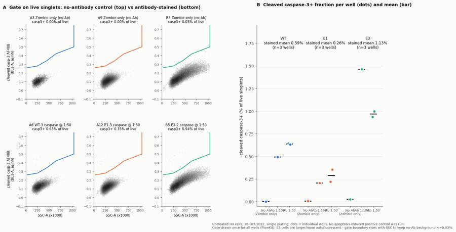
112
thinking
The figure's x-labels overlap and the sparse caspase+ events are hard to see, so I'll space out the groups, shorten the labels, and overlay gated events in colour.
113
tool call · Bash
python3 - <<'EOF'
s=open('figure.py').read()
s=s.replace(""" ax.hexbin(d['SSC-A'][m]/1e3,ft(d['BL1-A'][m]),gridsize=90,bins='log',cmap='Greys',extent=(0,1050,-0.1,0.75),mincnt=1,linewidths=0)""",
""" from matplotlib.colors import LinearSegmentedColormap
cm=LinearSegmentedColormap.from_list('g',['#b5b4ae','#0b0b0b'])
ax.hexbin(d['SSC-A'][m]/1e3,ft(d['BL1-A'][m]),gridsize=90,bins='log',cmap=cm,extent=(0,1050,-0.1,0.75),mincnt=1,linewidths=0)
p=res.get_gate_membership('casp3_pos')
ax.scatter(d['SSC-A'][p]/1e3,ft(d['BL1-A'][p]),s=6,color=COL[line],linewidths=0,zorder=3)""")
s=s.replace("groups=[('No Ab\\n(Zombie only)',","groups=[('no Ab',")
s=s.replace("('Ab 1:100',","('1:100',").replace("('Ab 1:50',","('1:50',")
s=s.replace("x=li*3.6+gi","x=li*4.2+gi*1.2")
s=s.replace("ax.text(li*3.6+1.5,1.68,","ax.text(li*4.2+1.2,1.68,")
s=s.replace("ax.hlines(v.mean(),x-0.3,x+0.3,color=INK,lw=2,zorder=2)","ax.hlines(v.mean(),x-0.38,x+0.38,color=INK,lw=2,zorder=4)")
s=s.replace("ax.set_xticks(xt); ax.set_xticklabels(xl,fontsize=8)","ax.set_xticks(xt); ax.set_xticklabels(xl,fontsize=9)\nax.set_xlabel('antibody dilution (no Ab = Zombie-only control)',fontsize=9)")
open('figure.py','w').write(s)
EOF
python3 figure.py114
tool output
(Bash completed with no output)
115
tool call · Read
{
"file_path": "/task/outputs/figure.png"
}116
tool output
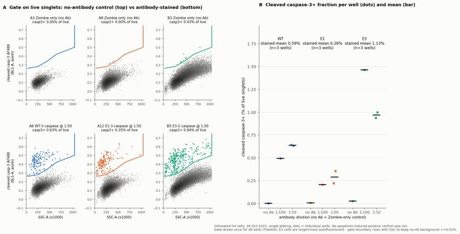
118
agent
The figure reads correctly now. One last data check before writing the report: are the Zombie-bright (dead) cells ever cleaved-caspase-3+? That determines what the live-gated metric leaves out.
119
tool call · Bash
python3 - <<'EOF'
import sys; sys.path.insert(0,'.')
from common import *
import flowkit as fk
g=fk.parse_gating_xml('/task/outputs/gates.xml')
CAS=np.array([(30000,0.26),(250000,0.28),(450000,0.34),(650000,0.42),(1040000,0.50),(1040000,1.2),(30000,1.2)])
C=pd.read_csv('/task/outputs/counts.csv');
for w in ['A4','A5','A6','A10','A11','A12','B4','B5','B6']:
f=lay[lay.well==w].file.iloc[0]; s=fk.Sample(RAW+f); res=g.gate_sample(s)
d=s.as_dataframe(source='raw'); d.columns=[c[0] for c in d.columns]
dm=res.get_gate_membership('dead')
inn=Path(CAS).contains_points(np.c_[d['SSC-A'],ft(d['BL1-A'])])
print(w,'dead',dm.sum(),'dead&caspgate',(dm&inn).sum(), '%.2f%%'%(100*(dm&inn).sum()/dm.sum()))
# check counts reproducibility
s=fk.Sample(RAW+lay.file.iloc[15]); r=g.gate_sample(s); print(r.report[['gate_name','count']])
print(C[C.well=='B4'])
EOF120
tool output
A4 dead 319 dead&caspgate 0 0.00%
A5 dead 133 dead&caspgate 0 0.00%
A6 dead 443 dead&caspgate 3 0.68%
A10 dead 1461 dead&caspgate 3 0.21%
A11 dead 1207 dead&caspgate 2 0.17%
A12 dead 1525 dead&caspgate 1 0.07%
B4 dead 633 dead&caspgate 13 2.05%
B5 dead 777 dead&caspgate 6 0.77%
B6 dead 584 dead&caspgate 2 0.34%
gate_name count
0 cells 24356
1 singlets 23814
3 dead 633
2 live 23181
4 casp3_pos 339
file ... pct_of_parent
90 Caspase_h4_mlk(4)_caspase_Group_B4_E3-1_1-100.fcs ... NaN
91 Caspase_h4_mlk(4)_caspase_Group_B4_E3-1_1-100.fcs ... 88.5576
92 Caspase_h4_mlk(4)_caspase_Group_B4_E3-1_1-100.fcs ... 97.7747
93 Caspase_h4_mlk(4)_caspase_Group_B4_E3-1_1-100.fcs ... 97.3419
94 Caspase_h4_mlk(4)_caspase_Group_B4_E3-1_1-100.fcs ... 2.6581
95 Caspase_h4_mlk(4)_caspase_Group_B4_E3-1_1-100.fcs ... 1.4624
[6 rows x 7 columns]122
agent
Dead cells are almost never caspase+ (0–13 events per well), so gating on live cells loses almost nothing. Writing the report and answer.json.
123
tool call · Write
{
"file_path": "/task/outputs/report.md",
"content": "# EXP22004082 \u2013 H4 cleaved caspase-3 intracellular flow, plate of 26-Oct-2022\n\n## Question\nThis run tested the Cell Signaling cleaved caspase-3 (Asp175) Alexa Fluor 488 antibody (#9669) for intracellular flow cytometry (ICFC) in H4 cells. The aim was to practise the assay before using it in iPSC-derived neurons. The analysis asks three things:\n\n1. Does the antibody, used at 1:100 or 1:50 together with Zombie NIR viability staining, resolve a cleaved caspase-3+ population above the no-antibody background?\n2. Does the 1:50 dilution give a different result from 1:100?\n3. Is the cleaved caspase-3+ fraction higher in the PGRN KO clones (E1, E3) than in WT, as the background section predicts?\n\nNo apoptosis inducer was applied on this plate. Camptothecin is listed in Materials but was not used, so all wells are untreated (baseline) cells.\n\n## Methods\n- **Data:** 18 Attune NxT FCS 3.1 files (wells A1\u2013A12 and B1\u2013B6), each acquired for about 98 s from about 163 \u00b5L. Analysis was done in FlowKit 1.2.3 using a single GatingStrategy for all wells (`gates.xml`), with no per-well changes. All counts come from `strategy.gate_sample()`.\n- **Channel assignment:** the stored labels are out of date. BL1-A is labelled \"AAV-GFP\" but carries the cleaved caspase-3 AF488 signal (488 nm, V=250). RL3-A carries Zombie NIR (640 nm, V=350), as set out in the plan's voltage settings.\n- **Compensation:** none (`uncompensated`). The file spillover matrix is the identity, and the single-stain controls show no measurable spillover:\n - AF488+ events in the caspase-only wells have a median RL3 of 96\u2013166, the same as unstained cells (115\u2013181).\n - The BL1 median in Zombie-only wells is 244/255/396, versus 253/262/400 in unstained wells.\n- **Transform:** fluorescence gates are drawn on an asinh scale (GatingML `asinh`, T=1,048,576, M=4, A=0). Scatter is linear.\n- **Gating hierarchy:**\n - `cells` (FSC-A 150,000\u20131,040,000 and SSC-A 30,000\u20131,040,000). This removes debris and events at the scatter ceiling.\n - `singlets` (FSC-A vs FSC-H diagonal polygon).\n - `live`: Zombie NIR below a dead-cell boundary that rises with FSC-A, because dim Zombie staining of live cells scales with cell size (asinh 0.66 \u2192 0.75). In wells without Zombie NIR this gate keeps all singlets.\n - `dead` (role `other`): the complement of `live` within singlets.\n - `casp3_pos` (marker_positive, parent `live`): BL1-A above a boundary that rises with SSC-A (asinh 0.26 at SSC 30k to 0.50 at SSC 1.04M). The boundary has to rise because autofluorescence increases with cell size and complexity, and is especially high in the larger E3 cells. A flat BL1 cut-off of 0.30 would give 1.8\u20131.9% false positives in the E3 unstained and Zombie-only wells; the sloped gate gives 0.01\u20130.03%.\n- **Metric:** % cleaved caspase-3+ of live singlets = `casp3_pos / live \u00d7 100`. No normalisation was applied, because the no-antibody background is \u22640.03%. Conditions are cell line \u00d7 dilution, plus each line pooled across the three stained wells. Mean and SD are across wells.\n- **Sensitivity check:** an alternative, stricter gate (BL1 asinh >0.35 and SSC-A <450k) was computed outside FlowKit to test whether the conclusions depend on the gate. It is not a reported population.\n\n## Results\n**QC**\n- No clogs or dry runs: event rates are smooth over the full 98 s in every well, with no dropouts.\n- E3 wells (B1\u2013B6) have 4.1\u20135.1% of events at the FSC-A/SSC-A ceiling, versus 0.13\u20130.48% for WT and E1. The large E3 cells are partly off-scale at FSC 20 / SSC 290. These events are removed by the `cells` gate, and the wells are flagged `saturation`, keep_with_note.\n- WT wells recovered far fewer cells: 3,149\u201321,946 events, versus 24,797\u201358,936 for E1 and E3. A2 (WT caspase only, 1:100) has only 3,149 events and 26 casp3_pos events. It is flagged `too_few_events`, keep_with_note. It is a single-stain control and is not used in the main metric.\n- No well was excluded. Singlets are 96\u201399% of cells. Dead cells (Zombie-bright) are 1.1\u20133.2% of singlets.\n\n**Specificity**\n- A discrete cleaved caspase-3+ population sits well above the autofluorescent main population in every antibody-stained well (figure, panel A).\n- The no-antibody controls are essentially empty:\n - Zombie-only: A3 0/5,053, A9 2/44,891 (0.004%), B3 10/38,860 (0.026%).\n - Unstained: 0.000/0.006/0.013%.\n- The positive cells are Zombie-dim (median RL3 9,000\u201321,000, the same as the live negatives) and have lower SSC (median 190\u2013311k versus 277\u2013391k). This fits early-apoptotic, membrane-intact cells.\n- Zombie-bright dead cells are almost all caspase-negative: 0\u201313 events per well fall in the casp3 region. Restricting the metric to live cells therefore loses almost no positives.\n\n**Per-well % casp3+ of live singlets (positive events / live)**\n\n| Line | 1:100 | 1:50 | 1:50 | mean \u00b1 SD (n=3) | No-Ab (Zombie only) |\n|---|---|---|---|---|---|\n| WT | A4 0.49 (94/19,086) | A5 0.64 (79/12,301) | A6 0.63 (128/20,251) | **0.59 \u00b1 0.08** | A3 0.00 |\n| E1 | A10 0.21 (110/53,625) | A11 0.22 (102/46,498) | A12 0.36 (162/45,690) | **0.26 \u00b1 0.08** | A9 0.004 |\n| E3 | B4 1.46 (339/23,181) | B5 0.94 (303/32,340) | B6 1.00 (211/21,169) | **1.13 \u00b1 0.29** | B3 0.026 |\n\n**Caspase-only wells (no Zombie, so not live-gated)**\n- A2 1.02%, A8 0.20%, B2 1.29%. These agree with the matching line's stained wells, which confirms the plate map labels.\n\n**Dilution**\n- There was no consistent effect on % positive: 1:50 versus 1:100 was +0.14 pp in WT, +0.08 pp in E1 and \u22120.50 pp in E3, with n=1 well at 1:100.\n- Positive events at 1:50 were somewhat brighter. Median BL1 of positives: WT 6,136\u20136,441 vs 5,162; E1 4,898\u20134,956 vs 4,737; E3 6,976\u20137,033 vs 5,078.\n- Stain index at 1:50 was 21.3\u201322.5 vs 18.9
… [3,714 more characters not shown]124
tool output
File created successfully at: /task/outputs/report.md (file state is current in your context — no need to Read it back)
125
tool call · Bash
python3 - <<'EOF'
import json
a={
"question":"Can the CST cleaved caspase-3 (Asp175) AF488 antibody (1:100 or 1:50, with Zombie NIR viability stain) detect a cleaved caspase-3+ population in H4 cells by intracellular flow above no-antibody background, and is the cleaved caspase-3+ fraction of live singlets higher in PGRN KO clones (E1, E3) than in WT?",
"comparisons":[
{"comparison":"WT: antibody-stained vs no-antibody (Zombie-only) control","a":"WT_noAb_zombie_only","b":"WT_casp_all","direction":"increase","magnitude":"0.00% (0/5,053) -> 0.59 +/- 0.08% of live singlets (79-128 positive events/well)","confidence":"high"},
{"comparison":"E1: antibody-stained vs no-antibody (Zombie-only) control","a":"E1_noAb_zombie_only","b":"E1_casp_all","direction":"increase","magnitude":"0.004% -> 0.26 +/- 0.08% of live singlets (~58x)","confidence":"high"},
{"comparison":"E3: antibody-stained vs no-antibody (Zombie-only) control","a":"E3_noAb_zombie_only","b":"E3_casp_all","direction":"increase","magnitude":"0.026% -> 1.13 +/- 0.29% of live singlets (~44x)","confidence":"high"},
{"comparison":"PGRN KO E1 vs WT (all stained wells, n=3 each)","a":"WT_casp_all","b":"E1_casp_all","direction":"decrease","magnitude":"0.59 -> 0.26% (-0.33 pp, 0.44x; 0.43x with stricter alternative gate); all E1 wells below all WT wells","confidence":"medium"},
{"comparison":"PGRN KO E3 vs WT (all stained wells, n=3 each)","a":"WT_casp_all","b":"E3_casp_all","direction":"increase","magnitude":"0.59 -> 1.13% (+0.54 pp, 1.9x; only 1.45x with stricter alternative gate - E3 cells larger/more autofluorescent)","confidence":"low"},
{"comparison":"WT antibody 1:50 vs 1:100","a":"WT_casp_1to100","b":"WT_casp_1to50","direction":"no_clear_change","magnitude":"0.49% (n=1) -> 0.64% (n=2), +0.14 pp; positives ~22% brighter at 1:50","confidence":"low"},
{"comparison":"E1 antibody 1:50 vs 1:100","a":"E1_casp_1to100","b":"E1_casp_1to50","direction":"no_clear_change","magnitude":"0.21% (n=1) -> 0.29% (n=2), +0.08 pp; positive median BL1 ~4% higher","confidence":"low"},
{"comparison":"E3 antibody 1:50 vs 1:100","a":"E3_casp_1to100","b":"E3_casp_1to50","direction":"no_clear_change","magnitude":"1.46% (n=1) -> 0.97% (n=2), -0.50 pp (opposite sign to WT/E1); positives ~38% brighter, stain index 7.3 vs 5.6","confidence":"low"}
],
"overall_answer":"partial: the antibody resolves a discrete, Zombie-dim cleaved caspase-3+ population at both 1:100 and 1:50 (0.2-1.5% of live singlets vs <=0.03% in no-antibody controls; dilution does not change % positive), but no apoptosis-induced positive control was run, so assay range is unproven, and PGRN KO did not consistently increase cleaved caspase-3 (E1 0.26% and E3 1.13% vs WT 0.59%, opposite directions).",
"assay_verdict":"needs_optimisation",
"next_action":"repeat_with_change",
"next_change":{"what":"Apoptosis positive control (camptothecin treatment) on each cell line",
"from":"none - all wells untreated (camptothecin listed in Materials but not used on this plate)",
"to":"add camptothecin-treated wells per line (e.g. 2 uM and 5 uM, ~16-24 h before harvest) plus DMSO-vehicle wells, stained with Zombie NIR + cleaved caspase-3 AF488 at 1:50, with matched Zombie-only (no-antibody) controls",
"why":"Baseline cleaved caspase-3+ is only 0.2-1.5% of live cells; without an induced positive the gate's ability to capture real caspase-3 activation and the assay window are untested, and that must be shown before KO vs WT or RNAswap rescue comparisons."},
"excluded_wells":[],
"caveats":[
"No apoptosis-induced positive control; only baseline apoptosis (0.2-1.5%) measured, dynamic range unknown.",
"Replicates are technical wells from one plating/day; only one 1:100 well per line; genotype differences cannot be separated from clone effects (E1 and E3 move in opposite directions).",
"E3 cells are larger and more autofluorescent; 4.1-5.1% of E3 events at the FSC/SSC ceiling were excluded and the E3/WT ratio is gate-dependent (1.9x vs 1.45x).",
"WT wells had low cell recovery (3,149-21,946 events vs 24,797-58,936); only 79-128 positive events per WT stained well; A2 single-stain control had 26 positives.",
"Metric counts live (Zombie-dim) cells only; Zombie-bright dead cells were almost all caspase-negative.",
"H4 neuroglioma cells; gates/voltages will need re-establishing in iPSC-derived neurons."
]
}
json.dump(a,open('/task/outputs/answer.json','w'),indent=2)
# validate
import pandas as pd, flowkit as fk
cs=pd.read_csv('/task/outputs/condition_summary.csv'); conds=set(cs.condition)
for c in a['comparisons']: assert c['a'] in conds and c['b'] in conds, c
fl=pd.read_csv('/task/outputs/flags.csv'); assert sorted(fl[fl.decision=='exclude'].well)==sorted(a['excluded_wells'])
C=pd.read_csv('/task/outputs/counts.csv'); print(list(C.columns), len(C), C.groupby('population').size().to_dict())
print(C.groupby('role').population.unique())
print(list(cs.columns)); print(list(fl.columns), len(fl))
g=fk.parse_gating_xml('/task/outputs/gates.xml'); print([x[0] for x in g.get_gate_ids()])
# recount check
lay=pd.read_csv('/task/inputs/plate_layout.csv'); bad=0
for _,r in lay.iterrows():
res=g.gate_sample(fk.Sample('/task/inputs/raw/'+r.file))
for p in ['cells','singlets','live','dead','casp3_pos']:
if res.get_gate_count(p)!=C[(C.file==r.file)&(C.population==p)]['count'].iloc[0]: bad+=1
print('mismatches',bad)
EOF
ls -la /task/outputs; head -3 /task/outputs/counts.csv126
tool output
['file', 'well', 'population', 'role', 'parent', 'count', 'pct_of_parent'] 108 {'all_events': 18, 'casp3_pos': 18, 'cells': 18, 'dead': 18, 'live': 18, 'singlets': 18}
role
cells [cells]
live [live]
marker_positive [casp3_pos]
other [all_events, dead]
singlets [singlets]
Name: population, dtype: object
['condition', 'wells', 'n_wells_used', 'mean', 'sd', 'metric_definition', 'normalisation_applied']
['file', 'well', 'issue_type', 'evidence', 'decision'] 18
['cells', 'singlets', 'live', 'casp3_pos', 'dead']
mismatches 0
total 444
drwxr-xr-x 2 root root 4096 Nov 10 17:18 .
drwxr-xr-x 5 root root 4096 Nov 10 17:08 ..
-rw-r--r-- 1 root root 4846 Nov 10 17:18 answer.json
-rw-r--r-- 1 root root 2481 Nov 10 17:15 condition_summary.csv
-rw-r--r-- 1 root root 9578 Nov 10 17:13 counts.csv
-rw-r--r-- 1 root root 396875 Nov 10 17:16 figure.png
-rw-r--r-- 1 root root 2948 Nov 10 17:15 flags.csv
-rw-r--r-- 1 root root 6450 Nov 10 17:13 gates.xml
-rw-r--r-- 1 root root 9377 Nov 10 17:17 report.md
file,well,population,role,parent,count,pct_of_parent
Caspase_h4_mlk(4)_caspase_Group_A1_WT_no stain.fcs,A1,all_events,other,none,6969,
Caspase_h4_mlk(4)_caspase_Group_A1_WT_no stain.fcs,A1,cells,cells,all_events,6397,91.7922128
agent
The antibody works, but the plate can't answer whether PGRN loss raises caspase-3. In untreated H4 cells there is a clear cleaved caspase-3+ population, and the two knockout clones move in opposite directions from WT. All seven deliverables are in `/task/outputs/`. The saved gates reload with FlowKit and reproduce every count in `counts.csv` exactly.
**Channels:** BL1-A carries the caspase AF488 signal even though the file labels it "AAV-GFP"; RL3-A carries Zombie NIR. No compensation was needed: the file's spillover matrix is the identity and the single-stain controls show no spillover.
**Gating:** cells → singlets → live (Zombie-low) → `casp3_pos`, plus a `dead` population. The caspase gate's boundary rises with side scatter (SSC), because larger cells are more autofluorescent. That matters for E3: a flat cut-off would give 1.8–1.9% false positives in its no-antibody controls, while the sloped gate keeps them at ≤0.03%.
**Results (% cleaved caspase-3+ of live singlets, 3 wells per line):**
| Line | Stained, mean ± SD | No-antibody control |
|---|---|---|
| WT | 0.59 ± 0.08 | 0.00 |
| E1 (KO) | 0.26 ± 0.08 | 0.004 |
| E3 (KO) | 1.13 ± 0.29 | 0.026 |
- **Detection:** a distinct positive population appears in every stained well, at both 1:100 and 1:50. The positive cells are Zombie-dim (membrane intact), and dead cells are almost all caspase-negative.
- **Dilution:** no consistent effect on % positive (up in WT and E1, down in E3). At 1:50 the positive cells are 3–38% brighter.
- **Genotype:** E1 is about 0.44× WT and E3 about 1.9× WT. Every E1 well sits below every WT well, and every E3 well above. The E3 gap depends on the gate: a stricter alternative gate gives 1.45×, partly because E3 cells are larger and more autofluorescent. Two clones going opposite ways points to clone effects, not PGRN loss.
**QC:** no wells excluded and no clogs.
- **E3 wells:** 4.1–5.1% of events are off-scale on forward and side scatter. These are removed by the cells gate and noted in `flags.csv`.
- **A2 (WT, antibody only):** only 3,149 events and 26 positives. It's kept with a note, and it isn't used in the main metric.
- **WT recovery:** all WT wells gave fewer cells (3–22k events against 25–59k for E1 and E3).
**Answer and next step:**
- **Answer:** `partial`.
- **Assay verdict:** needs optimisation, because no apoptosis-induced positive control was run (camptothecin is in the materials list but wasn't used). Only baseline levels of 0.2–1.5% were measured, so it is untested whether the assay can detect an increase in apoptosis.
- **Next action:** `repeat_with_change`. Add camptothecin-treated wells for each line (e.g. 2 and 5 µM for 16–24 h), with DMSO vehicle wells and matched no-antibody controls, and stain at 1:50.
- **Also in that run:** lower the scatter voltages so E3 cells stay on scale, collect at least 20,000 live singlets per well, and use independent platings before drawing any KO vs WT conclusion.
Files are in `/task/outputs/`:
- `gates.xml`
- `counts.csv`
- `flags.csv`
- `condition_summary.csv`
- `figure.png`
- `report.md`
- `answer.json`
final result
The antibody works, but the plate can't answer whether PGRN loss raises caspase-3. In untreated H4 cells there is a clear cleaved caspase-3+ population, and the two knockout clones move in opposite directions from WT. All seven deliverables are in `/task/outputs/`. The saved gates reload with FlowKit and reproduce every count in `counts.csv` exactly. **Channels:** BL1-A carries the caspase AF488 signal even though the file labels it "AAV-GFP"; RL3-A carries Zombie NIR. No compensation was needed: the file's spillover matrix is the identity and the single-stain controls show no spillover. **Gating:** cells → singlets → live (Zombie-low) → `casp3_pos`, plus a `dead` population. The caspase gate's boundary rises with side scatter (SSC), because larger cells are more autofluorescent. That matters for E3: a flat cut-off would give 1.8–1.9% false positives in its no-antibody controls, while the sloped gate keeps them at ≤0.03%. **Results (% cleaved caspase-3+ of live singlets, 3 wells per line):** | Line | Stained, mean ± SD | No-antibody control | |---|---|---| | WT | 0.59 ± 0.08 | 0.00 | | E1 (KO) | 0.26 ± 0.08 | 0.004 | | E3 (KO) | 1.13 ± 0.29 | 0.026 | - **Detection:** a distinct positive population appears in every stained well, at both 1:100 and 1:50. The positive cells are Zombie-dim (membrane intact), and dead cells are almost all caspase-negative. - **Dilution:** no consistent effect on % positive (up in WT and E1, down in E3). At 1:50 the positive cells are 3–38% brighter. - **Genotype:** E1 is about 0.44× WT and E3 about 1.9× WT. Every E1 well sits below every WT well, and every E3 well above. The E3 gap depends on the gate: a stricter alternative gate gives 1.45×, partly because E3 cells are larger and more autofluorescent. Two clones going opposite ways points to clone effects, not PGRN loss. **QC:** no wells excluded and no clogs. - **E3 wells:** 4.1–5.1% of events are off-scale on forward and side scatter. These are removed by the cells gate and noted in `flags.csv`. - **A2 (WT, antibody only):** only 3,149 events and 26 positives. It's kept with a note, and it isn't used in the main metric. - **WT recovery:** all WT wells gave fewer cells (3–22k events against 25–59k for E1 and E3). **Answer and next step:** - **Answer:** `partial`. - **Assay verdict:** needs optimisation, because no apoptosis-induced positive control was run (camptothecin is in the materials list but wasn't used). Only baseline levels of 0.2–1.5% were measured, so it is untested whether the assay can detect an increase in apoptosis. - **Next action:** `repeat_with_change`. Add camptothecin-treated wells for each line (e.g. 2 and 5 µM for 16–24 h), with DMSO vehicle wells and matched no-antibody controls, and stain at 1:50. - **Also in that run:** lower the scatter voltages so E3 cells stay on scale, collect at least 20,000 live singlets per well, and use independent platings before drawing any KO vs WT conclusion. Files are in `/task/outputs/`: - `gates.xml` - `counts.csv` - `flags.csv` - `condition_summary.csv` - `figure.png` - `report.md` - `answer.json`